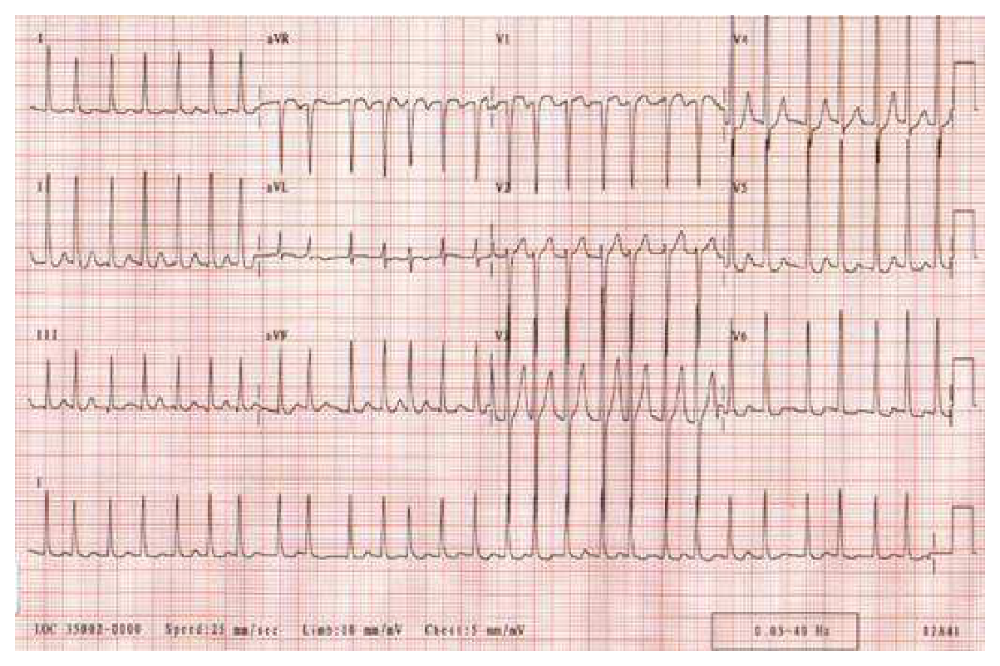
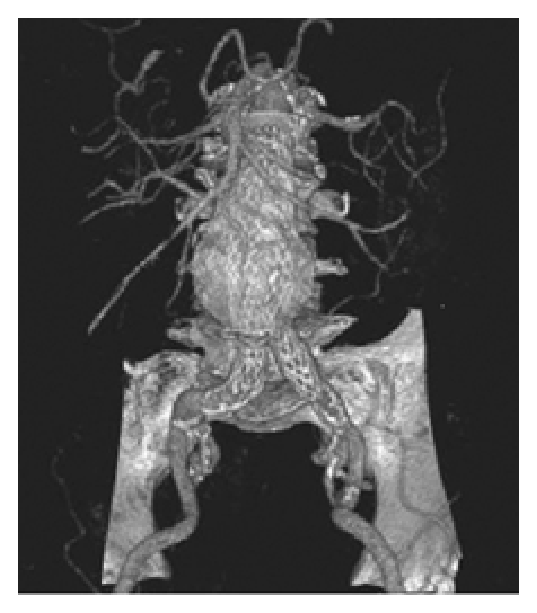
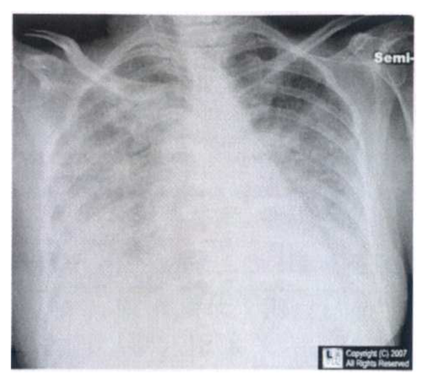
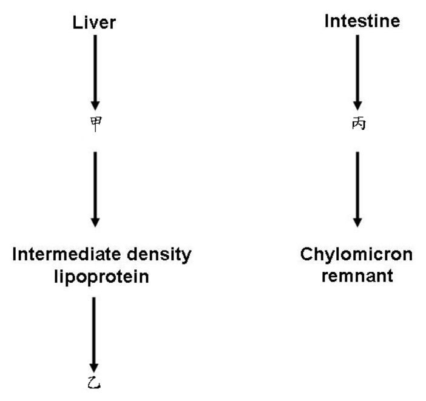
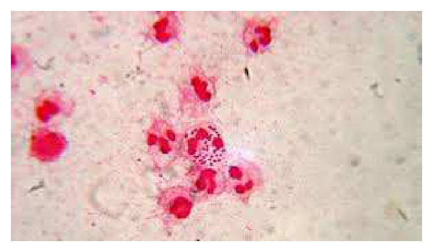
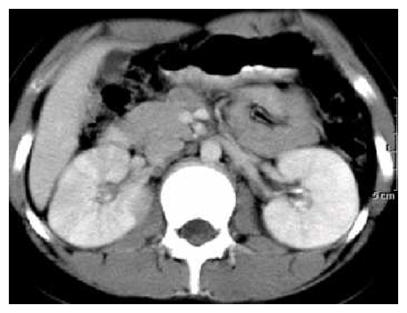
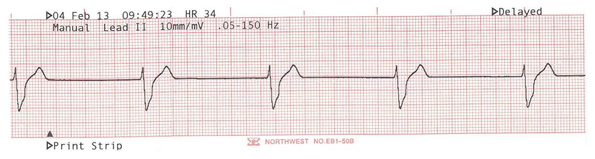

104 年醫師醫學（三）（包括內科、家庭醫學科等科目及其相關臨床實例與醫學倫理）試題與答案
這一頁是民國 104 年醫師醫學（三）（包括內科、家庭醫學科等科目及其相關臨床實例與醫學倫理）的整份歷屆試題，共 80 題，題目與標準答案出自考選部「國家考試試題及測驗式試題答案」開放資料，其中 80 題附有詳解。以下逐題列出題幹、選項與答案；要計時作答或記錄成績，請用線上練習。
考選部原始場次代碼：104090
線上作答這一科 →
全部 80 題
第 1 題
下列有關老人尿失禁的描述，何者正確？
- （A）80歲以上女性最常見的尿失禁種類是「混合型」尿失禁
- （B）使用利尿劑類的降血壓藥不會增加尿失禁的機會
- （C）使用安眠鎮靜藥不會增加尿失禁的機會
- （D）第一線尿失禁的治療是使用藥物治療
答案：（A）
詳解與考點
正解：高齡女性的尿失禁型態與初始處置。高齡女性常同時有腹壓性尿失禁與急迫性尿失禁，混合型尿失禁因而很常見；處置先從病史、排尿日誌、可逆因素與非藥物介入著手，故選 A。
B：利尿劑增加尿量與排尿急迫感，可能誘發或加重尿失禁；它看似只是降血壓藥，卻會透過利尿作用影響症狀，故錯。
C：安眠鎮靜藥可造成嗜睡、反應與行動能力下降，使病人來不及如廁，亦可能加重尿失禁，故錯。
D：第一線通常是生活型態調整、骨盆底肌訓練、膀胱訓練及檢視藥物；藥物依尿失禁類型與症狀再個別考量，故錯。
本題考點：尿失禁（urinary incontinence）的類型與可逆因素；混合型尿失禁（mixed urinary incontinence）結合腹壓性與急迫性症狀；老年整合性評估（geriatric assessment）先處理藥物與功能性因素。
第 2 題
25歲女病人因呼吸困難及心悸就診。身體診察顯示血壓110/64 mmHg，脈搏116/min，兩側肺底可聽見濕性囉音。心臟聽診發現第一心音增加，心尖部位及胸骨左側下緣可聽見明顯的二尖瓣開瓣音（opening snap, OS）及心舒期隆隆雜音（diastolic rumbling murmur）。下列敘述何者正確？
- （A）第一心音增加，表示二尖瓣狹窄不嚴重
- （B）第二心音至開瓣音的間期（S2-OS interval）愈長表示二尖瓣狹窄愈嚴重
- （C）心跳快為此類病人心臟的代償機轉，此時把心跳降低對病情不好，反而加重
- （D）diastolic rumbling murmur在此類病人發生心臟衰竭加重，心臟排血量低時，心雜音強度可能減弱甚至消失
答案：（D）
詳解與考點
正解：開瓣音合併心尖部舒張期隆隆雜音指向二尖瓣狹窄（mitral stenosis）。雜音強度取決於跨瓣血流量；心衰竭惡化、心輸出量低時，跨二尖瓣流量下降，即使狹窄仍在，雜音也可能變弱甚至不明顯，故選 D。
A：第一心音增強通常表示瓣葉仍具活動性、在舒張末仍開放而於收縮初關閉，不能據此判定狹窄不嚴重，故錯。
B：狹窄愈嚴重，左心房壓力愈高，二尖瓣在主動脈瓣關閉後更早被推開，因此 S2-OS interval 反而較短，不是較長，故錯。
C：心跳過快會縮短舒張期、減少血液通過狹窄二尖瓣的時間並升高左心房壓力；適當控制心率有助改善鬱血，並非有害，故錯。
本題考點：二尖瓣狹窄（mitral stenosis）的聽診；S2-OS interval 與狹窄嚴重度；低心輸出量（low cardiac output）可使流量依賴性心雜音減弱。
第 3 題
48歲女性主訴胸悶，偶有眩暈並有運動時呼吸困難，身體診察脈搏64/min, 心臟大小正常，有S4 gallop，在胸骨右緣第三及四肋間有Grade IV/VI射出型心縮期雜音, 向頸部放散（radiation to neck）。血行動力學壓力（mmHg）如下：右心房平均壓：6；右心室43/8；肺動脈：43/18（平均壓28）；肺動脈楔壓：平均壓22；左心室227/33；主動脈139/72（平均壓98），病人之心臟病為：
- （A）僧帽瓣狹窄
- （B）僧帽瓣閉鎖不全
- （C）主動脈瓣狹窄
- （D）主動脈瓣閉鎖不全
答案：（C）
詳解與考點
正解：運動性呼吸困難、向頸部放散的射出性收縮期雜音與 S4，已是主動脈瓣狹窄（aortic stenosis）的典型線索。血行動力學再顯示左心室收縮壓 227 mmHg、主動脈收縮壓 139 mmHg，跨瓣收縮壓差為 227-139=88 mmHg，支持嚴重的左心室流出道阻塞，故選 C。
A：僧帽瓣狹窄主要造成心尖部舒張期隆隆雜音與左心房壓上升，不能解釋左心室與主動脈間 88 mmHg 的收縮期壓差，故錯。
B：僧帽瓣閉鎖不全為心尖部全收縮期雜音，常向腋下放散，並非向頸部放散的射出型雜音，故錯。
D：主動脈瓣閉鎖不全典型為舒張期遞減型雜音及寬脈壓，並不產生本題明顯的跨主動脈瓣收縮期壓差，故錯。
本題考點：主動脈瓣狹窄（aortic stenosis）的三聯徵；跨瓣壓力梯度（transvalvular pressure gradient）；左心室壓力負荷（pressure overload）可產生 S4。
第 4 題
有位病人自訴近3個月來，肚子愈來愈脹，食慾愈來愈差，但每天仍有大便。就醫時身體診察發現腹部有位移性鈍音（shifting dullness），肚臍周圍有些血管，肝臟摸不到，脾臟鈍音（splenic dullness）長度增加。關於這位病人之病情，下列各項敘述，何者錯誤？
- （A）這位病人很可能有肝門脈高壓（portal hypertension）
- （B）確立其診斷之最便宜有效之檢查為腹部超音波掃描
- （C）若有腹水且抽取出來呈透明淡黃色，其serum-ascites albumin gradient（SAAG）應 < 1.1
- （D）首要治療應考慮服用利尿劑，包括aldosterone inhibitor
答案：（C）
詳解與考點
正解：位移性鈍音、臍周側枝循環與脾腫大支持肝硬化相關的肝門脈高壓腹水。肝門脈高壓造成的腹水，其 serum-ascites albumin gradient（SAAG）應為 ≥1.1 g/dL，而非 <1.1 g/dL；因此錯誤敘述是 C。
A：腹水加上脾腫大與腹壁側枝靜脈，是肝門脈高壓常見的臨床組合，敘述正確，故非答案。
B：腹部超音波可確認腹水、評估肝臟形態、脾臟及門靜脈系統，為便宜且實用的初步檢查，敘述正確，故非答案。
D：肝硬化門脈高壓腹水的治療包括限鈉與利尿；醛固酮拮抗劑（aldosterone inhibitor）常是重要選擇，敘述正確，故非答案。
本題考點：肝門脈高壓（portal hypertension）的臨床徵象；腹水血清－腹水白蛋白梯度（SAAG）≥1.1 g/dL 支持門脈高壓；肝硬化腹水（cirrhotic ascites）的利尿治療。
第 5 題
有位 50 歲民眾接受健檢時，body mass index = 33 kg/m2，上消化道內視鏡檢查發現有糜爛性食道炎（erosive esophagitis），屬LA classification grade A。經仔細詢問，他並無明顯心窩灼熱感（heartburn），也沒有胃酸逆流的感覺，食物吞嚥也正常。下列各項敘述，何者最正確？
- （A）應立即給予服用proton pump inhibitor（PPI）至少4個月
- （B）未來應每年檢查上消化道內視鏡一次
- （C）應進一步檢查食道內之pH值
- （D）應建議他減重，並少喝酒、咖啡及茶，少吃油脂類及酸性食物
答案：（D）
詳解與考點
正解：肥胖、無警訊症狀且僅 LA grade A 的糜爛性食道炎。此時應優先處理可逆危險因子：減重及避免個人會誘發逆流的飲食與飲品；此措施同時改善胃食道逆流與肥胖相關風險，故選 D。
A：無症狀的輕度糜爛性食道炎不必一概立即長期使用 PPI；PPI 可依症狀與黏膜病灶個別安排，但「至少 4 個月」不是此情境的必然首選，故錯。
B：LA grade A 且無吞嚥困難等警訊時，不需因此每年例行內視鏡追蹤，故錯。
C：食道 pH 監測主要用於診斷不明或症狀與檢查結果不一致等情況；已有內視鏡證實的輕度病灶且無症狀，通常不是下一步，故錯。
本題考點：胃食道逆流疾病（gastroesophageal reflux disease, GERD）；洛杉磯分級（Los Angeles classification）；生活型態介入（lifestyle modification）是肥胖相關逆流的重要治療。
第 6 題
75歲男性病人，抽菸10年以上，使用calcium channel blocker 治療高血壓10年，胸痛接受顯影劑注射冠狀動脈攝影，檢查前血液肌酸酐1.0 mg/dL，檢查結果發現嚴重冠狀動脈硬化，3天後的血液肌酸酐1.1 mg/dL，7天後發生加速型的高血壓（accelerated hypertension）及少尿而住院。住院當天的理學檢查，高血壓視網膜病變、心臟擴大、下肢脈搏正常，但有皮膚網狀青斑（livedo reticularis），血液嗜伊紅性白血球增加、補體下降、肌酸酐3.0 mg/dL，尿液紅血球6～10/HPF，蛋白質1+。最可能的診斷是：
- （A）顯影劑腎病變（contrast nephropathy）
- （B）腎臟粥狀樣栓塞（atheroembolic renal disease）
- （C）腎動脈狹窄（renal artery stenosis）
- （D）腎靜脈栓塞（renal vein thrombosis）
答案：（B）
詳解與考點
正解：血管攝影後延遲出現腎功能惡化，並有皮膚網狀青斑、嗜伊紅性白血球增加與低補體，是膽固醇結晶栓塞的典型組合。粥樣斑塊受介入操作擾動後，微栓子進入腎小動脈造成腎臟粥狀樣栓塞（atheroembolic renal disease），故選 B。
A：顯影劑腎病變通常在注射後較早出現肌酸酐上升，且不會特徵性造成 livedo reticularis、嗜伊紅性白血球增加與低補體，故錯。
C：腎動脈狹窄可造成難治性高血壓與腎功能受損，但無法完整解釋血管操作後的皮膚網狀青斑及嗜伊紅性白血球增加，故錯。
D：腎靜脈栓塞常見血尿、蛋白尿與腎臟腫大或疼痛，和本題的全身性膽固醇栓塞表現不符，故錯。
本題考點：膽固醇栓塞症候群（cholesterol embolization syndrome）；腎臟粥狀樣栓塞（atheroembolic renal disease）；livedo reticularis、嗜伊紅性白血球增加與低補體是重要線索。
第 7 題
68歲女性病人，高血壓及糖尿病10年，兩年前血液肌酸酐2.0 mg/dL，五週前血液肌酸酐7.5mg/dL。最近1週高血壓更嚴重，出現瞻妄、少尿、水腫、呼吸困難、嘔吐。血液肌酸酐9.6mg/dL，Na+ 120 mmol/L，K+ 5.5 mmol/L，尿液蛋白質4+。腎臟超音波左腎長度9.8 cm，右腎長度9.6 cm。下列處置何者最正確？
- （A）腎臟切片檢查
- （B）透析治療
- （C）以angiotensin-converting enzyme inhibitor治療
- （D）以脈衝式類固醇（pulse methylprednisolone）治療
答案：（B）
詳解與考點
正解：病人有進行性腎衰竭，且出現瞻妄、少尿、肺水腫相關呼吸困難、嘔吐、低鈉與高血鉀，代表已出現尿毒症及難以用保守方式處理的體液與電解質問題。這些是腎臟替代治療的緊急適應症，最正確處置是透析，故選 B。
A：腎臟切片可在特定病因未明時協助診斷，但目前有立即危及生命的尿毒症、體液負荷與電解質問題，不能取代先行透析，故錯。
C：angiotensin-converting enzyme inhibitor 可用於蛋白尿腎病的長期治療，但此時少尿與高血鉀明顯，急性期不應以它作為優先處置，故錯。
D：脈衝式類固醇僅適用於特定免疫性腎炎；本題未提供可支持該病因的證據，且不能延後處理透析適應症，故錯。
本題考點：透析適應症（indications for dialysis）；尿毒症（uremia）；難治性體液過多、電解質異常與尿毒症症狀須優先腎臟替代治療。
第 8 題
63歲的男性患者有多次流鼻血，曾到耳鼻喉科求診，被診斷為慢性鼻竇炎引起鼻黏膜潰瘍出血。三個月之後因感冒引起久咳不癒有三週之久。其間偶有多次小咳血發生。胸部X光攝影可見數顆大小不等的腫塊。抽血檢查發現ANA 1：40 (-)，hemoglobin 8.9 g/dL，ESR 21mm/1h，CRP 3.2 mg/dL。最可能的診斷為何？
- （A）lung cancer
- （B）granulomatosis with polyangiitis（Wegener’s syndrome）
- （C）Behçets’s disease
- （D）lung tuberculoma
答案：（B）
詳解與考點
正解：反覆鼻出血與慢性鼻竇炎樣上呼吸道病灶，後續出現咳血及胸部多發、大小不等結節，應想到 granulomatosis with polyangiitis（GPA）。此病為壞死性肉芽腫性血管炎，可同時侵犯鼻竇與肺部，故選 B。
A：肺癌可造成咳血與肺部腫塊，但難以將先前的鼻竇黏膜潰瘍、反覆鼻出血與多發肺結節串成同一系統性疾病，故錯。
C：Behçet’s disease 常以反覆口腔及生殖器潰瘍、眼部病變為主，並非鼻竇破壞合併多發肺結節的典型表現，故錯。
D：肺結核瘤可呈肺部結節，但不能良好解釋上呼吸道破壞性病灶；多發結節看似可與感染混淆，然而鼻竇與肺的組合更支持 GPA，故錯。
本題考點：肉芽腫性多血管炎（granulomatosis with polyangiitis, GPA）；上、下呼吸道肉芽腫性病灶；血管炎（vasculitis）的系統性臨床整合。
第 9 題
一位32歲男性因發燒無力有一星期之久求診，血液常規顯示白血球計數達96,000/µL, 芽球85％, Hb 7.0 gm/dL, platelet 15,000/µL。骨髓檢查報告為acute lymphoblastic leukemia。費城染色體陽性。經誘導化學治療及tyrosine kinase inhibitor（TKI）達到完全緩解，以下何者會有最高的根治機會？
- （A）鞏固治療＋維持治療
- （B）鞏固治療＋骨髓摧毀性化學治療併自體造血幹細胞移植
- （C）鞏固治療＋骨髓摧毀性化學治療併人類白血球抗原（HLA）吻合之異體造血幹細胞移植
- （D）鞏固治療＋anti-CD-5, CD-20, CD-22雞尾酒免疫治療
答案：（C）
詳解與考點
正解：費城染色體陽性的急性淋巴性白血病（Philadelphia chromosome-positive ALL）屬高復發風險。達完全緩解後，以鞏固治療接續骨髓摧毀性治療及 HLA 吻合異體造血幹細胞移植，可提供移植物抗白血病效應，根治機會最高，故選 C。
A：鞏固治療加維持治療可用於 ALL 的治療架構，但對費城染色體陽性這類高風險疾病，根治機會通常不如合適的異體移植，故錯。
B：自體造血幹細胞移植沒有異體免疫細胞帶來的移植物抗白血病效應，對高風險 ALL 的根治效果較受限，故錯。
D：anti-CD-5、CD-20、CD-22 的組合不構成此情境下取代異體移植的標準根治策略；抗原表現也須依個案確認，故錯。
本題考點：費城染色體陽性急性淋巴性白血病（Ph-positive ALL）；異體造血幹細胞移植（allogeneic hematopoietic stem cell transplantation）；移植物抗白血病效應（graft-versus-leukemia effect）。
第 10 題
一位65歲老先生跌倒，造成右下肢骨折送醫，X光檢查發現兩側下肢長骨及鎖骨另有多處蝕骨（osteolytic）現象。腫瘤標記包括 PSA, CEA, SCC, AFP皆在正常範圍。以下檢查何者為診斷及分期所必要？①血液常規 ②血液球蛋白免疫電泳分析 ③腎功能 ④骨髓檢查
- （A）僅①③
- （B）僅②③④
- （C）僅①②④
- （D）①②③④
答案：（D）
詳解與考點
正解：多處蝕骨病灶且常見實體腫瘤標記未升高，要高度懷疑多發性骨髓瘤（multiple myeloma）。診斷與分期需同時評估貧血等血液學變化、單株免疫球蛋白、腎功能及骨髓中漿細胞，因此①血液常規、②血液球蛋白免疫電泳、③腎功能、④骨髓檢查都必要，故選 D。
A：僅有血液常規與腎功能，缺少確認單株蛋白與骨髓漿細胞的關鍵資料，無法完成診斷與分期，故錯。
B：雖有免疫電泳、腎功能及骨髓檢查，但血液常規用於評估貧血等骨髓瘤相關器官損害，不能省略，故錯。
C：雖有血液常規、免疫電泳及骨髓檢查，但腎功能是骨髓瘤器官損害與治療評估的重要部分，不能省略，故錯。
本題考點：多發性骨髓瘤（multiple myeloma）；單株蛋白（monoclonal protein）檢測；骨髓檢查（bone marrow examination）與腎功能評估。
第 11 題
原發性自發性氣胸（primary spontaneous pneumothorax）的敘述，下列何者最不恰當？
- （A）大都是因為肋膜氣泡（pleural blebs）破裂
- （B）約有一半（50％）病患會再次發生氣胸
- （C）初次治療可考量簡單抽吸（simple aspiration）
- （D）胸腔鏡所做肋膜黏連（thoracoscopy with pleural abrasion）氣胸再發生率約25%
答案：（D）
詳解與考點
正解：題目問最不恰當。原發性自發性氣胸若接受胸腔鏡肺泡處理合併肋膜磨擦，目的在降低復發；考題所採的典型成人術式資料中，復發率多明顯低於 25％，故（D）最不恰當。不同術式、是否切除肺泡及追蹤期可使研究結果有較寬差異，25％並非所有情境都不可能。
A：原發性自發性氣胸常與肺尖部肋膜下氣泡或肺大泡破裂有關，敘述正確，故非答案。
B：未施行預防復發處置者確有相當的復發風險，首次發作後復發可接近此量級，敘述作為概括描述可接受，故非答案。
C：穩定病人的初次處置可依氣胸大小、症狀與院內流程考量簡單抽吸，敘述正確，故非答案。
本題考點：原發性自發性氣胸（primary spontaneous pneumothorax）；肋膜氣泡（pleural blebs）；胸腔鏡肋膜磨擦（thoracoscopic pleural abrasion）用於降低復發。
第 12 題
一位50歲女性肺結核病患，已服第一線4種抗結核藥物一個月，病人主訴食慾較差，稍微倦怠，但小便更深黃，肝功能檢查發現bilirubin T/D 15/8 mg/dL，AST：68 U/L，ALT：70U/L。最不可能是那一種抗結核藥物引起？
- （A）isoniazid
- （B）rifampin
- （C）ethambutol
- （D）pyrazinamide
答案：（C）
詳解與考點
正解：黃疸、深色尿與肝功能異常提示抗結核藥物相關肝損傷。isoniazid、rifampin 與 pyrazinamide 都可能造成肝毒性；ethambutol 的重要不良反應是視神經炎，而非典型肝毒性，因此最不可能是 C。
A：isoniazid 可造成藥物性肝炎，符合本題黃疸與轉胺酶上升的情境，故非答案。
B：rifampin 可造成肝膽相關不良反應及肝功能異常，亦可能參與此病人的表現，故非答案。
D：pyrazinamide 的肝毒性是重要限制因素之一，尤其在合併治療時須留意，故非答案。
本題考點：抗結核藥物肝毒性（antituberculous drug-induced hepatotoxicity）；ethambutol 相關視神經炎（optic neuritis）；藥物性肝損傷（drug-induced liver injury）。
第 13 題
一位50歲女性有狹心症病史數年，最近因為疲倦無力，食慾減少，身體檢查發現皮膚有白斑（vitiligo）；實驗室檢查free T4 0.5 ng/dL（normal range 0.8～1.8 ng/dL），TSH 25µIU/mL（normal range 0.1～2.0 µIU/mL），early morning cortisol 1.0 µg/dL（normalrange 9.0～15 µg/dL）。其母親有Graves’ disease病史，妹妹有Hashimoto’s thyroiditis病史。最好的治療方式為何？
- （A）先給予甲狀腺素每天100 µg，再給予可體酮（cortisone）每天25 mg
- （B）先給予可體酮每天25 mg，再給予甲狀腺素每天100 µg
- （C）先給予甲狀腺素每天25 µg，再給予可體酮每天25 mg
- （D）先給予可體酮每天25 mg，再給予甲狀腺素每天25 µg
答案：（D）
詳解與考點
正解：白斑、原發性甲狀腺低下與清晨 cortisol 極低，合併家族自體免疫病史，支持自體免疫多內分泌病變並有腎上腺功能不全。治療必須先補充糖皮質素，再以較低劑量開始甲狀腺素；若先給甲狀腺素，會增加代謝需求並可能誘發腎上腺危象，故選 D。
A：先給甲狀腺素會在未補足 cortisol 時增加腎上腺危象風險，且起始 100 µg 對此年齡且有狹心症者也不宜作為保守起始，故錯。
B：先補充可體酮的順序正確，但 100 µg 甲狀腺素起始劑量對有冠心症的病人偏高，可能誘發心肌缺血，故錯。
C：25 µg 的甲狀腺素起始量較合適，但給藥順序仍錯；它看似劑量保守，卻不能消除先補甲狀腺素的腎上腺危象風險，故錯。
本題考點：自體免疫多腺體症候群（autoimmune polyglandular syndrome）；原發性腎上腺功能不全（primary adrenal insufficiency）；甲狀腺低下合併腎上腺不足時須先補糖皮質素（glucocorticoid）。
第 14 題
一位68歲女性有狹心症病史數年，一年前右側甲狀腺無意間發現一2.5 cm結節，當時心律正常，體重58公斤，free T4 1.6 ng/dL（normal range 0.8～1.8 ng/dL），T3 120 ng/dL（normal range 80～180 ng/dL），TSH 0.15µIU/mL（normal range 0.1～2.0 µIU/mL）。甲狀腺I-131掃瞄顯示右側甲狀腺結節為熱結節（hot nodule）左側甲狀腺顯影減低。最近她來追蹤，體重53公斤，心悸會喘，下肢水腫，心電圖顯示心房震顫，驗血發現free T4 2.3ng/dL，T3 220 ng/dL，TSH＜0.2 µIU/mL；甲狀腺右葉結節大小與之前相同。最好的治療方式為何？
- （A）持續追蹤甲狀腺結節大小
- （B）甲狀腺超音波檢查及甲狀腺功能追蹤
- （C）甲狀腺右葉結節手術切除
- （D）甲狀腺I-131放射治療
答案：（D）
詳解與考點
正解：既有熱結節且左葉受抑制，代表自主性分泌甲狀腺素的毒性腺瘤（toxic adenoma）。病人已出現明顯甲狀腺毒症、心房顫動與心衰竭表現；就選項中的根本治療而言，I-131 放射治療可消融功能亢進的結節，故選 D。實施前須先控制心率與交感症狀，依病況穩定甲狀腺毒症後再安排治療。
A：病人已由亞臨床狀態進展為顯性甲狀腺毒症並出現心房顫動，僅追蹤結節大小會延誤治療，故錯。
B：超音波與功能追蹤可補充評估，但已知為熱結節且發生臨床併發症，不能取代治療，故錯。
C：手術切除也可在特定情況考慮；但高齡、合併狹心症且具功能性熱結節者，放射性碘通常是較少侵入的根本選擇，故錯。
本題考點：毒性腺瘤（toxic adenoma）；自主性甲狀腺結節（autonomously functioning thyroid nodule）；甲狀腺毒症（thyrotoxicosis）治療前須先穩定心血管併發症。
第 15 題
下列有關咳嗽之敘述，何者錯誤？
- （A）在正常情況下，咳嗽可用來做清理呼吸道的保護機制
- （B）有些藥物，如ACEI（angiotensin-converting enzyme inhibitor）亦會引起咳嗽
- （C）胃食道逆流會引起食道發炎，但不會引發慢性咳嗽
- （D）咳嗽可因外在因子（如煙、塵）或內在因子（如呼吸道分泌物）誘發
答案：（C）
詳解與考點
正解：題目問何者錯誤。胃食道逆流不僅可造成食道炎，也可經微量吸入、迷走神經反射等機制引起或加重慢性咳嗽；因此 C 的「不會引發慢性咳嗽」錯誤。
A：咳嗽能清除分泌物、異物與刺激物，是正常的呼吸道保護反射，敘述正確，故非答案。
B：ACE inhibitor 可因緩激肽相關機制引起乾咳，是慢性咳嗽病史中需檢視的常見藥物因素，敘述正確，故非答案。
D：煙、塵等外在刺激與分泌物等內在刺激都可活化咳嗽反射，敘述正確，故非答案。
本題考點：慢性咳嗽（chronic cough）的常見原因；胃食道逆流（gastroesophageal reflux）；血管張力素轉換酶抑制劑相關咳嗽（ACE inhibitor-induced cough）。
第 16 題
有關正常血管（blood vessel）的敘述，下列何者正確？
- （A）動脈之外層富含平滑肌細胞
- （B）微血管之外層富含纖維細胞（fibroblasts）
- （C）內皮細胞（endothelium）可調節血管收縮及放鬆
- （D）內皮細胞無法生產一氧化氮（NO）
答案：（C）
詳解與考點
正解：血管內皮細胞不是被動襯裡，而是調節血管張力的內分泌與旁分泌器官。它可釋放一氧化氮等舒張因子，也可產生收縮相關介質，因而調節血管收縮與放鬆，故選 C。
A：動脈的平滑肌主要位於中層（tunica media），外層是結締組織為主的外膜，故錯。
B：微血管壁主要由內皮細胞及基底膜構成，周細胞可伴隨其外；不能說其外層富含纖維母細胞，故錯。
D：內皮細胞可由 nitric oxide synthase 生成一氧化氮（NO），NO 是重要的血管舒張因子，故錯。
本題考點：血管內皮（vascular endothelium）的功能；一氧化氮（nitric oxide, NO）介導血管舒張；血管壁分層（tunica intima、media、adventitia）。
第 17 題
下列有關周邊性眩暈（peripheral vertigo）及中樞性眩暈（central vertigo）的鑑別診斷之敘述，何者正確？
- （A）中樞性眩暈的病人其眩暈通常較為溫和，但周邊性眩暈的病人其眩暈通常較強烈
- （B）眼睛直視不轉動（visual fixation）可以抑制中樞性眩暈病人的眼球震顫及眩暈，但無法抑制周邊性眩暈病人的眼球震顫及眩暈
- （C）中樞性眩暈的病人常同時有耳鳴或失聰，而周邊性眩暈的病人很少有耳鳴
- （D）中樞性眩暈的病人不會有垂直眼球震顫（vertical nystagmus），而周邊性眩暈的病人常有垂直眼球震顫
答案：（A）
詳解與考點
正解：周邊前庭病變常造成突發且強烈的旋轉感，中樞性眩暈的主觀旋轉感有時較不劇烈，但更須警覺伴隨的神經學缺損。因此 A 符合常用鑑別特徵，故選 A。
B：視覺凝視通常可抑制周邊性眩暈的眼球震顫，反而難以抑制中樞性眼球震顫；此選項將兩者顛倒，故錯。
C：耳鳴與聽力減退較支持周邊前庭或內耳病變，中樞性眩暈較常伴其他腦幹、小腦神經學徵象，故錯。
D：垂直或方向改變的眼球震顫是中樞性病灶警訊；周邊性通常為固定方向的水平合併旋轉性眼震，故錯。
本題考點：周邊性眩暈（peripheral vertigo）與中樞性眩暈（central vertigo）；視覺凝視抑制（visual fixation suppression）；垂直眼球震顫（vertical nystagmus）提示中樞病變。
第 18 題
一位65歲的男性病人，三年前有陳舊性心肌梗塞、高血壓、糖尿病、血脂異常及吸菸之習慣，在給予包括beta blocker及ACE inhibitor之降壓及控制血糖及血脂的藥物後，您建議病人每日服用100 mg之aspirin，但病人說他胃酸比較多可能有胃潰瘍，又聽說aspirin會傷胃，有人告訴他dipyridamole可以取代aspirin又可以保護心臟，堅持要使用dipyridamole。下列處置何者最不恰當？
- （A）基於病患自主的原則，給予dipyridamole
- （B）處方esomeprazole，搭配aspirin使用
- （C）處方clopidogrel使用
- （D）轉介病人給腸胃科醫師看是否須安排胃腸內視鏡檢查
答案：（A）
詳解與考點
正解：病人已有心肌梗塞，屬明確次級預防對象，抗血小板治療必須以有實證的 aspirin 或適當替代藥物為主。dipyridamole 不可單獨取代 aspirin 作為心肌梗塞後的標準次級預防；僅以病患自主就直接開立它，未提供充分有效的治療選項，是最不恰當處置，故選 A。
B：若需使用 aspirin 且有上消化道風險，合併 proton pump inhibitor 可降低上消化道出血風險，是合理作法，故非答案。
C：對 aspirin 不耐受或禁忌的病人，clopidogrel 是有實證的抗血小板替代選擇，故非答案。
D：病人疑有潰瘍或出血風險時，轉介腸胃科評估是否需要內視鏡，有助釐清風險與治療，故非答案。
本題考點：冠心症次級預防（secondary prevention of coronary artery disease）；抗血小板治療（antiplatelet therapy）；病人自主（patient autonomy）須以充分告知與合乎實證的選項為前提。
第 19 題
77歲女性有糖尿病及二尖瓣閉鎖不全病史，以往並無心律不整病史，某日病人突發心悸及呼吸困難需緊急插管住加護病房治療，心電圖如下所示 ，下列敘述何者不適當？

- （A）若病人的血行動力學不穩定時，可考慮直接電擊矯正此種心律不整
- （B）若患者血壓穩定，可考慮使用β-blocker或是calcium channel blocker（如 diltiazem）進行ratecontrol
- （C）病人若無contraindication，此心律不整持續12小時以上，應考慮給予抗凝血劑（anticoagulant）以減少發生stroke的風險
- （D）可考慮使用class IC的抗心律不整藥物（antiarrhythmic agent），如：flecainide或是propafenone治療
答案：（D）
詳解與考點
正解：圖中為規則性心搏過速，QRS 波群間可見連續鋸齒狀心房波，符合心房撲動（atrial flutter）。病人有二尖瓣閉鎖不全，屬結構性心臟病；Class IC 抗心律不整藥 flecainide 與 propafenone 不宜使用，可能引起前心律不整作用。因此（D）不適當，故選 D。
A：心房撲動合併低血壓、肺水腫、休克等血行動力學不穩定時，應優先同步電擊整流（synchronized cardioversion）恢復節律；急性呼吸困難需插管的情境須評估此處置，適當。
B：血壓穩定時，可用 β-blocker 或 diltiazem 減慢房室結傳導，控制心室速率（rate control）。這些藥物未必終止心房撲動，但可降低過快的心室反應，故適當。
C：心房撲動的血栓栓塞風險處理原則與心房顫動（atrial fibrillation）相同，應評估抗凝血。本例高齡、糖尿病、心臟病史；無禁忌症時考慮抗凝血以降低腦中風風險是適當方向，故非答案。
本題考點：心房撲動（atrial flutter）的心電圖可見規則心搏過速與鋸齒狀 flutter waves；不穩定者優先同步電擊整流（synchronized cardioversion），穩定者可做心室速率控制（rate control）；Class IC antiarrhythmic agents 應避免用於結構性心臟病。
第 20 題
一位72歲的男性病人最近開始發生活動時胸痛症狀，他有高血壓和糖尿病，長期接受藥物治療；身體診察可聽見在心尖部位有第二度收縮期雜音，下列何項診斷工具不應列為初步檢查項目？
- （A）胸部X-光片
- （B）24-小時心電圖（Holter monitoring）
- （C）標準12-導程心電圖
- （D）心臟超音波
答案：（B）
詳解與考點
正解：新發活動性胸痛應先評估心肌缺血與結構性心臟病。標準 12 導程心電圖、胸部 X 光及心臟超音波都可在初步評估中提供缺血、心臟大小、肺部鬱血與瓣膜病變資訊；24 小時 Holter 主要用於間歇性心律不整或症狀與心律的對照，不是此情境的初步檢查，故選 B。
A：胸部 X 光可評估心臟擴大、肺水腫及其他胸腔病因，於胸痛合併心雜音的初步評估可提供輔助資訊，故非答案。
C：標準 12 導程心電圖是評估胸痛與可能心肌缺血的基本初步檢查，敘述正確，故非答案。
D：心尖部收縮期雜音需評估二尖瓣及左心室功能，心臟超音波可直接提供結構與功能資訊，故非答案。
本題考點：活動性胸痛（exertional chest pain）的初步評估；12 導程心電圖（12-lead electrocardiogram）；Holter monitoring 主要用於間歇性心律不整。
第 21 題
一位65歲男性，有高血壓病史，一天抽菸一包，在腹部摸到一個無痛而隨脈搏跳動之腫塊，接受腹部斷層掃描血管攝影（CT angiography）發現異常如附圖，有關此患者下列敘述何者正確？

- （A）發生的比率在女性比較高
- （B）大部分此類腹部腫塊發生的位置，都在腎動脈（renal arteries）之上
- （C）如果腫塊的直徑小於5公分，五年內破裂的機會約為1～2%
- （D）即使在腫塊內發現血栓（mural thrombi），也不會增加周邊動脈栓塞的風險（peripheralembolization）
答案：（C）
詳解與考點
正解：圖中腹主動脈在腎動脈以下、接近主動脈分叉處呈明顯擴張，符合腹主動脈瘤（abdominal aortic aneurysm, AAA）；65歲男性、有高血壓且吸菸，又有無痛而隨脈搏跳動的腹部腫塊，也支持此診斷。小於5公分的 AAA 破裂風險相對低，5年內約為1～2%，故選 C。
A：AAA 好發於男性，且吸菸是重要危險因子；女性雖較少發生，但一旦存在時可能在較小直徑即有較高破裂風險。因此（A）把發生比率說成女性較高，混淆了盛行率與破裂風險。
B：典型 AAA 多位於腎動脈以下（infrarenal），圖中的擴張段亦在腎臟血管分支之下；腎動脈以上的腹主動脈瘤較少見，故（B）錯誤。
D：AAA 腔內的壁血栓（mural thrombus）可形成血栓或碎屑來源，脫落後會造成下肢等周邊動脈栓塞（peripheral embolization）；故（D）稱不會增加風險並不正確。
本題考點：腹主動脈瘤（abdominal aortic aneurysm, AAA）常見於高齡男性吸菸者，典型位置在腎動脈以下；AAA 的破裂風險隨瘤體直徑增加；壁血栓（mural thrombus）可能造成周邊動脈栓塞。
第 22 題
一名55歲男性有糖尿病病史，血壓160/100 mmHg，經尿液常規檢查：protein(+)，血清中的creatinine數值：1.0 mg/dL，其餘生化檢查並無異常的發現，則起始藥物的選擇以下列何者較為適當？
- （A）利尿劑（diuretics）
- （B）angiotensin-converting enzyme inhibitors / angiotensin receptor blockers
- （C）beta-blockers
- （D）methyldopa
答案：（B）
詳解與考點
正解：糖尿病、高血壓與 protein(+) 表示可能已有糖尿病腎病變的早期腎損害。angiotensin-converting enzyme inhibitor 或 angiotensin receptor blocker 除了降血壓，也可降低腎絲球內壓與蛋白尿，具有腎臟保護效果，因此是較適當的起始選擇，故選 B。
A：利尿劑可協助控制血壓與容量負荷，但對糖尿病合併蛋白尿者，未提供 ACE inhibitor/ARB 那樣直接的減蛋白尿腎保護優勢，故不是較適當的首選。
C：beta-blocker 可用於特定心血管適應症，但不以降低蛋白尿及腎臟保護為主要優勢，故錯。
D：methyldopa 主要用於特定情境的降壓治療，並非糖尿病蛋白尿病人的常規起始首選，故錯。
本題考點：糖尿病腎病變（diabetic kidney disease）；蛋白尿（proteinuria）是腎損害標記；腎素－血管張力素系統阻斷（renin-angiotensin system blockade）可降血壓與減少蛋白尿。
第 23 題
有關長鏈（long-chain）、中鏈（medium-chain）和短鏈（short-chain）脂肪酸（fattyacid）之敘述，何者正確？
- （A）食物中主要含短鏈脂肪酸
- （B）長鏈脂肪酸主要在大腸吸收
- （C）短鏈脂肪酸不會出現於糞便當中
- （D）中鏈脂肪酸的吸收，不需要胰臟的脂解作用（pancreatic lipolysis）
答案：（D）
詳解與考點
正解：中鏈脂肪酸的吸收是否仰賴胰臟脂解。中鏈脂肪酸較易水解與吸收，可直接經門脈運送，對胰臟脂肪酶與膽鹽形成微膠粒的依賴較低；因此在胰臟外分泌不足時仍較容易吸收，故選 D。
A：一般飲食中的脂肪主要是三酸甘油酯，其中脂肪酸以長鏈脂肪酸為主；短鏈脂肪酸多由大腸菌叢發酵膳食纖維產生，並非食物脂肪的主要型態。
B：長鏈脂肪酸主要在小腸吸收，須經消化後形成微膠粒進入腸上皮細胞，再組成乳糜微粒經淋巴系統運送；大腸主要吸收短鏈脂肪酸，故部位錯置。
C：短鏈脂肪酸雖可被大腸吸收，但未吸收的部分仍可能出現在糞便中；「不會」是過度絕對的敘述。
本題考點：脂肪消化與吸收（fat digestion and absorption）——長鏈脂肪酸較依賴胰脂肪酶、膽鹽與微膠粒；中鏈脂肪酸（medium-chain fatty acids）可較直接吸收並進入門脈；短鏈脂肪酸（short-chain fatty acids）主要由結腸菌叢發酵產生。
第 24 題
22歲男性患者因為胃腸息肉接受檢查，發現在嘴唇有許多黑色pigmentation，其最可能的診斷為何？
- （A）Osler-Weber-Rendu syndrome
- （B）Peutz-Jeghers syndrome
- （C）familial adenomatous polyposis
- （D）Turcot’s syndrome
答案：（B）
詳解與考點
正解：胃腸息肉合併嘴唇多發黑色素沉著，是 Peutz-Jeghers syndrome 的典型組合。此遺傳性息肉症以錯構瘤性息肉（hamartomatous polyps）及口周、口腔黏膜黑色素斑為特徵，故選 B。
A：Osler-Weber-Rendu syndrome 是遺傳性出血性微血管擴張症，重點為反覆鼻出血、皮膚或黏膜微血管擴張與動靜脈畸形，並非黑色素斑合併腸道息肉。
C：familial adenomatous polyposis 以大腸大量腺瘤性息肉為主，可伴腸外腫瘤，但口唇黑色素沉著不是其代表線索；它看似也有腸息肉，錯在息肉病理型態與皮膚黏膜表現不符。
D：Turcot’s syndrome 為腸道腺瘤性息肉或大腸癌合併中樞神經腫瘤的症候群，沒有本題所述特徵性口唇色素沉著。
本題考點：Peutz-Jeghers syndrome——錯構瘤性息肉（hamartomatous polyps）與黏膜皮膚黑色素沉著（mucocutaneous pigmentation）的辨識；遺傳性息肉症候群的腸外表現。
第 25 題
有關大腸癌的敘述，何者正確？
- （A）糞便潛血反應檢查敏感度較大腸鏡差，故不適合做大腸癌篩檢
- （B）左側大腸癌較右側大腸癌容易有貧血的表現
- （C）常規服用aspirin可減少腺瘤和腺癌的發生
- （D）第三期的大腸癌患者手術後不必接受化學治療
答案：（C）
詳解與考點
正解：可降低大腸腺瘤與腺癌發生的預防因子。aspirin 抑制 cyclooxygenase 相關發炎與腫瘤形成路徑，規律使用與大腸腺瘤及大腸癌風險降低有關，故選 C。實際是否使用仍須衡量出血等風險。
A：糞便潛血檢查的敏感度雖不及大腸鏡，卻因非侵入性且可重複施作，仍是大腸癌篩檢工具；敏感度較低不等於不適合篩檢。
B：右側大腸癌較易因慢性隱性出血表現為缺鐵性貧血；左側腫瘤較常因腸腔狹窄造成排便習慣改變或血便，故本項左右側特徵顛倒。
D：第三期大腸癌表示已有區域淋巴結侵犯，根治手術後通常須評估並接受輔助性化學治療；「不必」忽略了降低復發風險的治療原則。
本題考點：大腸直腸癌（colorectal cancer）篩檢——糞便潛血檢查可作族群篩檢；左右側大腸癌臨床表現；aspirin 與大腸腫瘤化學預防（chemoprevention）的關聯。
第 26 題
有關小型肝癌（small hepatocellular carcinoma）患者抽血檢驗，下列何者正確？
- （A）AFP（甲型胎兒蛋白、alfa-fetoprotein）一定大於320 ng/mL
- （B）約1/3患者AFP（甲型胎兒蛋白、alfa-fetoprotein）正常
- （C）肝發炎指數（AST、ALT）一定正常
- （D）AFP（甲型胎兒蛋白、alfa-fetoprotein）一定正常
答案：（B）
詳解與考點
正解：小型肝細胞癌的 AFP 並非必然升高。約有一部分小型肝細胞癌患者 AFP 可維持正常，題目所述約 1/3 屬合理的臨床現象，故選 B；因此不能以單次正常 AFP 排除肝癌。
A：AFP 可升高但敏感度有限，且升高也可能見於肝炎或肝硬化；「一定大於 320 ng/mL」把可變的腫瘤標記誤作必要條件。
C：AST、ALT 反映肝細胞損傷或發炎，會受慢性肝病活動度等影響，不能由小型肝癌推論為一定正常。
D：小型肝癌的 AFP 可以正常，但也可以升高；看似掌握到 AFP 正常的可能性，錯在「一定」二字。
本題考點：肝細胞癌（hepatocellular carcinoma）診斷——AFP 為輔助腫瘤標記而非排除或確診的唯一依據；小型肝癌可有正常 AFP；肝功能與發炎指數須合併影像及臨床風險判讀。
第 27 題
下列何者不是肝昏迷的初期症狀？
- （A）人格改變
- （B）睡眠型態改變
- （C）注意力不集中
- （D）腹瀉
答案：（D）
詳解與考點
正解：題目問不是肝昏迷初期症狀者。肝性腦病變早期主要是神經精神與睡眠覺醒改變；腹瀉雖可能造成脫水或電解質失衡而誘發或加重病情，並非肝昏迷本身的初期神經症狀，故選 D。
A：人格改變可表現為易怒、行為失當或情緒改變，是肝性腦病變早期認知與行為變化之一，故不是答案。
B：睡眠型態改變，常見日夜顛倒，是肝性腦病變的早期線索，故不是答案。
C：注意力不集中屬早期認知功能受損，可能先於明顯意識障礙出現，故不是答案。
本題考點：肝性腦病變（hepatic encephalopathy）——早期常見注意力、人格及睡眠覺醒改變；誘發因子與疾病本身的神經精神表現應分開判讀。
第 28 題
一位22歲女性病人因為6小時前吞食數量不明之acetaminophen藥片，被家人帶至急診處。病人有嘔吐現象，但生命跡象穩定，神智清楚。血液檢查呈現高之acetaminophen濃度：380 µg/mL，但是肝腎功能均正常。下列有關此病人之臨床狀況之敘述何者錯誤？
- （A）正常肝功能表示acetaminophen不會對此病人造成肝傷害
- （B）應考慮立即使用N-acetylcysteine治療
- （C）病人宜住院觀察2～5天
- （D）長期飲酒史是acetaminophen肝傷害之危險因子
答案：（A）
詳解與考點
正解：服藥後僅 6 小時，雖肝腎功能正常但 acetaminophen 濃度很高。acetaminophen 的肝毒性可有潛伏期，早期肝功能正常不能排除後續肝細胞傷害，因此（A）所稱不會造成肝傷害為錯誤敘述，故選 A。
B：高濃度暴露且到院時間明確時，應依風險評估儘速考慮 N-acetylcysteine；它看似在病人尚未肝損傷時過早，但解毒治療的效益正是在肝衰竭前介入，故敘述正確。
C：急性中毒病人須住院追蹤臨床狀態、藥物濃度及肝腎功能，觀察時間依後續檢驗與病程調整；本項並未把早期正常檢驗誤當作可立即排除風險，故非錯誤。
D：長期飲酒可能改變肝臟代謝與穀胱甘肽儲備，是 acetaminophen 肝毒性的危險因子，故敘述正確。
本題考點：acetaminophen 中毒（acetaminophen poisoning）——早期肝功能正常不能排除延遲性肝損傷；N-acetylcysteine 為重要解毒治療；酒精使用等因素會影響肝毒性風險。
第 29 題
下列有關大腸直腸癌（colorectal cancer, CRC）的敘述，何者錯誤？
- （A）CRC 的危險因子包括年紀50歲以上，一等親有 CRC 之家族史，曾患炎性腸病（inflammatory bowel disease）十年以上，有進行性腺瘤（advanced adenoma）、肥胖、糖尿病、飲食習慣多脂肪、多紅肉、少蔬果及少纖維質等
- （B）90% 的CRC出現在脾曲（splenic flexure）以下，可用乙狀結腸鏡（sigmoidoscopy）檢查發現
- （C）右側大腸之CRC，常出現貧血
- （D）左側大腸之CRC，會出現排便習慣改變或血便
答案：（B）
詳解與考點
正解：題目問錯誤敘述，關鍵在乙狀結腸鏡可見的範圍與大腸癌分布。大腸癌並非 90% 都位於脾曲以下，且近端大腸癌不能由乙狀結腸鏡完整檢出；因此（B）過度高估遠端分布並誤把乙狀結腸鏡當成充分檢查，故選 B。
A：年齡、家族史、長期炎性腸病、進行性腺瘤及肥胖、糖尿病與飲食型態皆與大腸直腸癌風險升高相關，故非答案。
C：右側大腸腔徑較大，腫瘤可長期隱性出血而不易阻塞，常以缺鐵性貧血表現，敘述正確。
D：左側大腸腔徑較窄，病灶較常造成排便習慣改變、腸阻塞症狀或肉眼血便，敘述正確。
本題考點：大腸直腸癌（colorectal cancer）——近端與遠端病灶的症狀差異；乙狀結腸鏡（sigmoidoscopy）的解剖檢查範圍；危險因子辨識。
第 30 題
下列何者為腹膜透析患者發生腹膜炎最常見之病因？
- （A）濾過性病毒
- （B）黴菌
- （C）革蘭氏陰性菌
- （D）革蘭氏陽性菌
答案：（D）
詳解與考點
正解：腹膜透析相關腹膜炎最常由導管出口、接頭或換液時的皮膚菌叢污染所致，故以革蘭氏陽性菌最常見，尤其常見於葡萄球菌類，故選 D。
A：病毒可造成全身感染，但不是腹膜透析相關腹膜炎的最常見病原。
B：黴菌性腹膜炎雖屬嚴重併發症，常需積極處理，但發生率遠低於革蘭氏陽性菌感染。
C：革蘭氏陰性菌也可造成腹膜炎，特別是腸源性或特定污染情境；它看似可由腹腔感染聯想到，但常見病原仍以皮膚來源的革蘭氏陽性菌為主。
本題考點：腹膜透析相關腹膜炎（peritoneal dialysis-associated peritonitis）——換液污染與導管相關感染；皮膚菌叢的革蘭氏陽性菌為最常見致病菌。
第 31 題
腎衰竭病人常有出血傾向，其中最重要的機轉為：
- （A）血小板數目減少
- （B）血小板凝集功能不正常
- （C）肝內凝血蛋白質合成減少
- （D）血管完整性異常
答案：（B）
詳解與考點
正解：腎衰竭的出血傾向以尿毒素造成的血小板功能障礙最重要，包括黏附與凝集異常；血小板數目可正常而仍出現黏膜出血或出血時間延長，故選 B。
A：腎衰竭病人的血小板數目未必減少，不能解釋其最典型的止血缺陷。
C：凝血蛋白質主要由肝臟合成，肝內合成減少是肝功能衰竭的問題，不是尿毒症出血傾向的主要機轉。
D：血管完整性可影響出血，但尿毒症最具代表性的異常是血小板品質而非血管結構本身。
本題考點：尿毒症出血（uremic bleeding）——原發性止血（primary hemostasis）障礙；血小板黏附與凝集功能異常可在血小板數目正常時造成出血傾向。
第 32 題
下列何類病人發生無症狀性菌尿症（asymptomatic bacteriuria）時最需要給予抗生素治療？
- （A）孕婦
- （B）罹患結核症的老年人
- （C）有留置導尿管者
- （D）糖尿病患者
答案：（A）
詳解與考點
正解：無症狀性菌尿通常不治療，但孕婦例外，因孕期菌尿與腎盂腎炎及不良妊娠結果風險相關，篩檢後應給予適當抗生素治療，故選 A。
B：無症狀的老年人即使有結核症，並不因此成為無症狀性菌尿的常規治療適應症；應先區別菌尿與真正泌尿道感染。
C：長期留置導尿管常形成菌尿與生物膜，若無症狀而任意使用抗生素，難以根除且會增加抗藥性，故不需常規治療。
D：糖尿病患者發生無症狀性菌尿時，若沒有症狀或其他特別介入情境，並不因糖尿病身分而常規給予抗生素。
本題考點：無症狀性菌尿（asymptomatic bacteriuria）——孕婦是重要治療例外；留置導尿管與糖尿病患者應避免將菌尿直接等同尿路感染；抗生素管理（antimicrobial stewardship）。
第 33 題
有關泌尿道感染，下列何者最為正確？
- （A）27歲女性，在過去一年發生了三次膀胱炎，一次急性腎盂腎炎。通常這個年紀的感染以革蘭氏陽性菌為主
- （B）懷孕25週32歲婦女，例行檢查尿液，高倍鏡下有15～20個白血球，尿液培養有大腸桿菌。她並無症狀，因此不須治療
- （C）68歲女性因脊椎損傷，出現神經性膀胱，需長期置留導尿管。尿液檢查高倍鏡下有30～40個白血球，尿液培養有大腸桿菌，應給予抗生素治療
- （D）56歲婦女，發生三次過腎盂腎炎，超音波檢查發現兩側有鹿角狀結石，尿液酸鹼值是8.5，尿液通常會培養出變形桿菌屬細菌，如Proteus mirabilis
答案：（D）
詳解與考點
正解：反覆腎盂腎炎、鹿角狀結石與尿液 pH 8.5 指向尿素酶陽性菌造成的感染性結石。Proteus mirabilis 可分解尿素使尿液鹼化，促成磷酸銨鎂結石（struvite stone），故選 D。
A：年輕女性社區型尿路感染最常見病原為革蘭氏陰性腸道菌，尤其 Escherichia coli，不是以革蘭氏陽性菌為主。
B：孕婦即使無泌尿症狀，尿液培養證實菌尿仍應治療，以降低後續腎盂腎炎等風險；本項把非孕婦的處置原則錯套於孕婦。
C：長期導尿者常有菌尿與膿尿，若無發燒、局部症狀或其他感染徵象，不應只因培養出 E. coli 就給抗生素，否則增加抗藥性與不良反應。
本題考點：感染性結石（struvite stone）——Proteus 等尿素酶陽性菌使尿液鹼化並形成鹿角狀結石；無症狀性菌尿（asymptomatic bacteriuria）的孕婦例外；社區型尿路感染常見 Escherichia coli。
第 34 題
下列有關Wegener’s granulomatosis之敘述，何者最正確？
- （A）血中可測到antiproteinase-3抗體
- （B）黑人較白人常見
- （C）腎切片＞50%組織，可見到肉芽組織（granuloma）
- （D）此病在眼部不會造成結膜炎及鞏膜炎（scleritis）
答案：（A）
詳解與考點
正解：Wegener’s granulomatosis 現稱 granulomatosis with polyangiitis，典型抗體為 proteinase 3（PR3）相關的 c-ANCA；因此血中可測得 anti-proteinase 3 抗體，故選 A。
B：此病並非黑人較白人常見，本項的流行病學方向不正確。
C：疾病名稱雖有 granulomatosis，但腎臟病理典型是少免疫沉積的壞死性新月體腎絲球腎炎；肉芽腫較常在呼吸道病灶見到，不能說腎切片過半都有肉芽組織。
D：granulomatosis with polyangiitis 可侵犯眼部，造成結膜炎、鞏膜炎或其他眼眶病變；「不會」為錯誤的絕對敘述。
本題考點：肉芽腫性多血管炎（granulomatosis with polyangiitis）——PR3-ANCA/c-ANCA 的關聯；少免疫沉積性腎絲球腎炎（pauci-immune glomerulonephritis）；上呼吸道、肺、腎與眼部的多系統侵犯。
第 35 題
巨大細胞血管炎（giant cell arteritis），常與下列何種疾病共同發生？
- （A）rheumatoid arthritis
- （B）Sjögren’s syndrome
- （C）polymyalgia rheumatica
- （D）primary biliary cirrhosis
答案：（C）
詳解與考點
正解：巨大細胞血管炎與 polymyalgia rheumatica 有強烈共病關係，兩者皆常見於高齡者，且可有肩頸與骨盆帶僵痛、發炎指標上升等共同發炎特徵，故選 C。
A：rheumatoid arthritis 是慢性發炎性關節炎，雖可與其他自體免疫疾病共存，但不是巨大細胞血管炎最典型的共同疾病。
B：Sjögren’s syndrome 以乾眼、乾口及唾液腺受侵犯為主，並非巨大細胞血管炎的經典關聯。
D：primary biliary cirrhosis 現多稱 primary biliary cholangitis，屬小膽管自體免疫疾病，與巨大細胞血管炎並無本題所問的典型共病關係。
本題考點：巨大細胞血管炎（giant cell arteritis）——與風濕性多肌痛（polymyalgia rheumatica）的臨床關聯；高齡者的大血管炎（large-vessel vasculitis）辨識。
第 36 題
下列有關自體免疫疾病及其自體抗原的配對中，何者最為正確？
- （A）multiple sclerosis—myelin-basic protein
- （B）rheumatoid arthritis—F-actin
- （C）autoimmune hepatitis—collagen type Ⅱ
- （D）Sjögren’s syndrome—deoxyribonucleoprotein
答案：（A）
詳解與考點
正解：multiple sclerosis 的自體免疫反應針對中樞神經髓鞘成分，其中包括 myelin basic protein；此配對符合疾病的脫髓鞘病理，故選 A。
B：rheumatoid arthritis 的重要自體抗體包括 rheumatoid factor 與 anti-citrullinated protein antibodies，F-actin 則較與自體免疫性肝炎的平滑肌抗體相關，故配對錯置。
C：autoimmune hepatitis 常見抗核抗體、平滑肌抗體等，collagen type II 則與關節軟骨及類風濕性關節炎相關；看似皆為自體免疫疾病，錯在靶抗原對應不同。
D：Sjögren’s syndrome 的代表性自體抗體為 anti-Ro/SSA 與 anti-La/SSB，不是 deoxyribonucleoprotein。
本題考點：自體抗原（autoantigen）——multiple sclerosis 與髓鞘鹼性蛋白（myelin basic protein）；類風濕性關節炎（rheumatoid arthritis）的 citrullinated proteins；Sjögren’s syndrome 的 Ro/SSA 與 La/SSB 抗體。
第 37 題
Sjögren’s syndrome病人最有可能出現那一種腫瘤？
- （A）thymoma
- （B）small cell carcinoma of lung
- （C）renal cell carcinoma
- （D）non-Hodgkin’s lymphoma
答案：（D）
詳解與考點
正解：Sjögren’s syndrome 的慢性 B 細胞活化會明顯增加 B 細胞非何杰金氏淋巴瘤風險，常與唾液腺長期淋巴球浸潤相關，故選 D。
A：thymoma 常與重症肌無力等疾病相關，並非 Sjögren’s syndrome 最具代表性的惡性腫瘤風險。
B：small cell carcinoma of lung 與吸菸及副腫瘤症候群較常相關，沒有 Sjögren’s syndrome 特異性的高風險關係。
C：renal cell carcinoma 不是 Sjögren’s syndrome 慢性自體免疫活化所特別增加的典型腫瘤。
本題考點：Sjögren’s syndrome——慢性 B 細胞活化（B-cell activation）與非何杰金氏淋巴瘤（non-Hodgkin’s lymphoma）風險；自體免疫疾病的惡性腫瘤監測。
第 38 題
有關何杰金氏淋巴瘤（Hodgkin’s lymphoma），下列何者顯示疾病分期為第三期？
- （A）頸部淋巴結侵犯與體重減輕
- （B）頸部淋巴結與腹股溝淋巴結侵犯
- （C）脾臟腫大
- （D）骨髓侵犯
答案：（B）
詳解與考點
正解：Hodgkin’s lymphoma 的 Ann Arbor 第三期定義為橫膈兩側淋巴結區皆受侵犯。頸部淋巴結位於橫膈上，腹股溝淋巴結位於橫膈下，故（B）符合第三期，故選 B。
A：頸部淋巴結侵犯在橫膈上；體重減輕屬 B symptoms，會在分期後加註 B，但不會因而使單一側淋巴結病灶成為第三期。
C：脾臟侵犯屬淋巴系統受累，但單獨脾臟腫大無法表示橫膈上下淋巴結同時侵犯，不能據此判為第三期。
D：骨髓侵犯代表播散性結外器官侵犯，屬第四期而非第三期。
本題考點：Ann Arbor staging——第三期（stage III）為橫膈上下淋巴結區受累；B symptoms 是分期後綴；骨髓等瀰漫性結外侵犯屬第四期。
第 39 題
一20歲男士有隱睪症病史，因睪丸腫大求診。體格檢查發現雙邊鎖骨上淋巴結腫大和乳房女性化。在這個階段最不合適的檢查應為：
- （A）血清甲型胎兒蛋白（AFP）
- （B）血清β-人類絨毛膜促性腺激素（β-HCG）
- （C）血清LDH
- （D）乳房超音波
答案：（D）
詳解與考點
正解：隱睪症病史加上睪丸腫大，高度懷疑睪丸生殖細胞腫瘤；鎖骨上淋巴結腫大提示轉移，乳房女性化可與腫瘤分泌 β-HCG 有關。此階段優先需要腫瘤標記與睪丸腫瘤評估，乳房超音波不能處理主要診斷與分期問題，最不適當，故選 D。
A：AFP 是非精原細胞型生殖細胞腫瘤的重要血清標記，可協助診斷、分層與追蹤，故適當。
B：β-HCG 可在部分睪丸生殖細胞腫瘤升高，也可解釋乳房女性化，故是合理的初步檢查。
C：LDH 雖較不特異，仍反映腫瘤負荷並可用於睪丸生殖細胞腫瘤的分期與追蹤，故適當。
本題考點：睪丸生殖細胞腫瘤（testicular germ cell tumor）——隱睪症為危險因子；AFP、β-HCG、LDH 為血清腫瘤標記；檢查應優先回應主要腫瘤診斷與分期。
第 40 題
一位40歲亞裔女性病人，沒有抽菸史，最近被診斷為非小細胞肺癌第四期，腫瘤有EGFR基因突變，下面何種治療較為合適？
- （A）EGFR 抑制劑
- （B）EGFR 抑制劑+化學治療
- （C）抑制血管增生抗體
- （D）EGFR 抑制劑+抑制 血管增生抗體
答案：（A）
詳解與考點
正解：第四期非小細胞肺癌已證實有 EGFR 基因突變。EGFR 驅動突變代表腫瘤對 EGFR tyrosine kinase inhibitor 有標靶治療敏感性，故以 EGFR 抑制劑為較合適的初始治療，選 A。
B：化學治療可在特定病程或合併考量中使用，但已知有 EGFR 驅動突變時，並非本題所問最直接的首選標靶策略；它看似更積極，卻不等於一開始就必須合併。
C：抑制血管增生抗體可用於部分晚期肺癌治療策略，但不能取代針對已知 EGFR 突變的驅動基因治療。
D：EGFR 抑制劑合併抑制血管增生抗體可見於特定治療方案討論，但題目在單一最合適選項下，應先掌握 EGFR 突變對 EGFR 抑制劑的直接預測價值。
本題考點：非小細胞肺癌（non-small cell lung cancer）的精準治療（precision oncology）——EGFR 驅動突變預測對 EGFR tyrosine kinase inhibitor 的反應；晚期治療方案會隨病人狀況與治療證據演進，本題採突變導向的基本原則。
第 41 題
一位56歲無特殊病史男性，亦無任何不適，在一次健康檢查時發現血紅素為13.5 gm/dL，白血球11500/µL，血小板875000/µL；理學檢查無特殊異常。下列何項抽血檢驗的結果可確定診斷此病人為原發性血小板增多症（essential thrombocythemia）而非次發性？
- （A）low thrombopoietin level
- （B）increased LAP score
- （C）JAK2 mutation
- （D）immature myeloid cells
答案：（C）
詳解與考點
正解：持續明顯血小板增多要區分反應性與骨髓增生性腫瘤。JAK2 mutation 支持具有克隆性的骨髓增生性腫瘤，能作為原發性血小板增多症的重要分子證據，故選 C。
A：thrombopoietin 濃度受多種調節影響，低值不是原發性血小板增多症的確定性診斷標記。
B：LAP score 主要用於特定白血球增生鑑別的歷史性指標，不能確定原發性血小板增多症。
D：周邊血出現 immature myeloid cells 可提示骨髓受壓、骨髓纖維化或其他骨髓疾病，但不具原發性血小板增多症的特異性。
本題考點：原發性血小板增多症（essential thrombocythemia）——骨髓增生性腫瘤（myeloproliferative neoplasm）的克隆性證據；JAK2 mutation 與反應性血小板增多症的鑑別。
第 42 題
一位24歲病人被發現有血紅蛋白H疾病（hemoglobin H disease），下列何種血紅蛋白在此病人特別多？
- （A）α2γ2
- （B）α2δ2
- （C）β4
- （D）γ4
答案：（C）
詳解與考點
正解：血紅蛋白 H disease 是 α-thalassemia 的三個 α-globin 基因缺失或失能，α 鏈不足時多餘的 β 鏈會聚合成 β4，即 hemoglobin H，故選 C。
A：α2γ2 是 fetal hemoglobin（HbF），需要 α 鏈，並非 α 鏈嚴重不足時的特徵性四聚體。
B：α2δ2 是 adult hemoglobin A2（HbA2），同樣需要 α 鏈，不能代表 hemoglobin H disease 的過剩 β 鏈聚合。
D：γ4 稱為 hemoglobin Bart’s，主要見於 α-globin 基因完全缺失導致的胎兒期嚴重 α-thalassemia；它看似也是 α 鏈缺乏的四聚體，錯在 hemoglobin H disease 的主要過剩鏈是成人期的 β 鏈。
本題考點：α-thalassemia——hemoglobin H disease 的 β4（HbH）；hemoglobin Bart’s 的 γ4；不同 α-globin 基因缺失程度與血紅蛋白四聚體的對應。
第 43 題
一位35歲女性因為月經流量太大應診，抽血檢查發現血紅素為11.2 gm/dL，白血球7550/µL，血小板196500/µL，前凝血酵素時間（PT）INR 1.0，活化之部分凝血激素時間（aPTT）56秒（control:28"-35"），下列何種檢查對此病人的診斷不是必要的？
- （A）factor VIII activity
- （B）factor IX activity
- （C）factor XIII activity
- （D）von Willebrand factor activity
答案：（C）
詳解與考點
正解：月經過多合併孤立性 aPTT 延長，而 PT、血小板正常，應優先鑑別內因性凝血路徑缺陷與 von Willebrand disease。factor VIII、IX 與 von Willebrand factor activity 有助鑑別；factor XIII 缺乏時 PT 與 aPTT 多正常，不能解釋 aPTT 56 秒，因此非必要檢查，故選 C。
A：factor VIII deficiency 會延長 aPTT，且 von Willebrand factor 缺乏也可使 factor VIII 降低；（A）看似只是血友病檢查，卻是孤立性 aPTT 延長的重要鑑別，不能省略。
B：factor IX deficiency 屬內因性凝血路徑異常，可造成 aPTT 延長，仍須檢驗排除，故屬必要評估。
D：von Willebrand disease 常以月經量過多等黏膜出血表現，並可因 factor VIII 穩定性下降而延長 aPTT；（D）與本題臨床線索相符，應檢測其活性。
本題考點：孤立性 aPTT 延長（isolated prolonged aPTT）提示內因性凝血路徑問題；von Willebrand disease 可造成黏膜出血與 factor VIII 降低；factor XIII deficiency 的常規 PT、aPTT 多正常。
第 44 題
正常的骨髓微環境（microenvironment）對造血幹細胞移植術之成敗至關重要，下列何者不在此列？
- （A）endothelial cell
- （B）mesenchymal stem cell
- （C）fibroblast
- （D）adipose cell
本題送分，無標準答案
詳解與考點
本題經考選部公告一律給分。骨髓微環境對造血幹細胞移植成敗之關鍵細胞成分中，(A)內皮細胞、(B)間質幹細胞、(C)纖維母細胞皆為教材公認構成造血龕（niche）之支持細胞；(D)脂肪細胞在骨髓微環境中之角色，部分教材將其列為造血抑制性成分、不屬支持造血之關鍵細胞，惟另有近年研究指出脂肪細胞亦參與造血調控與能量供應，使「不在此列」之唯一答案認定分歧。整體選項間何者應被排除因文獻立場不一而難以唯一判定。作答以現行血液學造血幹細胞移植骨髓微環境教材為準。
第 45 題
除了遺傳性小圓球症（hereditary spherocytosis）外，microspherocyte最常在下列何種疾病的血液抹片中觀察到？
- （A）輸血後溶血反應
- （B）自體免疫溶血性貧血
- （C）重度燒傷
- （D）敗血症
答案：（B）
詳解與考點
正解：microspherocyte 的形成機轉。溫抗體型自體免疫溶血性貧血中，脾臟巨噬細胞對被 IgG 標記紅血球進行部分膜移除，紅血球表面積減少而成小球形紅血球，故除遺傳性小圓球症外最常見於（B），故選 B。
A：輸血後溶血反應可有溶血與血紅素尿，但抹片表現取決於反應機轉，並非 microspherocyte 最典型、最常見的關聯。
C：重度燒傷的熱損傷會造成紅血球碎裂與形態不規則，可出現紅血球碎片；它看似也會傷害紅血球膜，但並非脾臟部分吞噬所致的典型 microspherocyte。
D：敗血症可因瀰漫性血管內凝血形成 schistocyte 等溶血線索，主要是微血管機械性破壞，與小球形紅血球的機轉不同。
本題考點：小球形紅血球（spherocyte/microspherocyte）是紅血球膜表面積減少的結果；溫抗體型自體免疫溶血性貧血（warm autoimmune hemolytic anemia）因脾臟部分吞噬而常見；schistocyte 則提示機械性溶血。
第 46 題
下列有關COPD病生理的敘述，何者錯誤？
- （A）COPD的炎症反應常會引起全身性的共病（co-morbidities）
- （B）COPD患者的肺功能異常是由於慢性炎症所造成的結構性變化，長期的使用抗發炎藥物如類固醇，幾乎可以完全恢復
- （C）COPD也可能發生於非抽煙者
- （D）參與COPD的發炎反應的發炎介質很多，包括IL-8, TNF-α, IL-1β
答案：（B）
詳解與考點
正解：COPD 的慢性發炎已造成不可完全逆轉的氣道與肺實質結構改變。藥物可減少症狀、急性惡化與部分發炎，但無法幾乎完全恢復既有的氣流受限及結構破壞；（B）把抗發炎治療誇大為幾乎完全恢復，故為錯誤敘述，故選 B。
A：COPD 不僅局限於肺部，慢性發炎與疾病負擔可伴隨心血管疾病、骨骼肌功能異常等共病，敘述正確，故非答案。
C：非吸菸者也可能因生質燃料暴露、職業暴露、氣道發育或其他危險因子罹患 COPD，吸菸雖是重要危險因子但非唯一原因，敘述正確。
D：COPD 的發炎網絡涉及多種細胞與介質，包括 IL-8、TNF-α、IL-1β 等，並非單一介質造成，敘述正確。
本題考點：慢性阻塞性肺病（chronic obstructive pulmonary disease, COPD）具有持續性、非完全可逆的氣流受限；慢性發炎（chronic inflammation）可導致氣道重塑與肺氣腫；治療重點是症狀控制與降低急性惡化。
第 47 題
下列何者不是造成急性呼吸窘迫症（acute respiratory distress syndrome）的原因？
- （A）溺水（near-drowning）
- （B）胃含物吸入（aspiration of gastric contents）
- （C）有機磷中毒（organophosphate intoxication）
- （D）吸入性傷害（inhalation injury）
本題送分，無標準答案
詳解與考點
本題經考選部公告一律給分。(C)有機磷中毒雖非ARDS最典型病因，但重度膽鹹脂酶抑制導致之呼吸衰竭、肺水腫在部分內科文獻中仍被列為ARDS之誘發因子之一，與(A)溺水、(B)胃內容物吸入、(D)吸入性傷害同屬教材中列舉之ARDS危險因子，致「何者不是」缺乏單一明確答案。四者於不同版本教材列表出入頗大，故送分。作答以現行內科學ARDS病因分類為準。
第 48 題
下列關於惡性間皮細胞癌（malignant mesothelioma）的敘述，何者錯誤？
- （A）與石綿（asbestos）的暴露有明顯的因果關係
- （B）抽菸不會增加罹患惡性間皮細胞癌的風險
- （C）在組織免疫染色上，CEA與TTF-1染色常呈現陽性反應
- （D）在臺灣，拆船業與水泥業工作者是屬於高風險群
答案：（C）
詳解與考點
正解：惡性間皮細胞癌與肺腺癌的免疫染色鑑別。CEA 與 TTF-1 較支持肺腺癌等上皮性腫瘤；惡性間皮細胞癌通常不以兩者陽性為典型，因此（C）錯誤，故選 C。
A：石綿暴露與惡性間皮細胞癌有明確因果關係，且常有長潛伏期，敘述正確，故非答案。
B：抽菸是肺癌的重要危險因子，但不是惡性間皮細胞癌的主要危險因子；抽菸與石綿對肺癌可有協同風險，不能據此誤推為間皮細胞癌風險增加，敘述正確。
D：拆船與水泥等可能接觸石綿的職業工作者屬高暴露族群，在臺灣亦應視為高風險，敘述正確。
本題考點：惡性間皮細胞癌（malignant mesothelioma）與石綿（asbestos）暴露密切相關；免疫組織化學（immunohistochemistry）用以鑑別間皮來源與肺腺癌；TTF-1、CEA 陽性較支持肺腺癌。
第 49 題
下列口服降血糖藥物中，不會引起體重增加的是那一種？
- （A）glyburide
- （B）metformin
- （C）pioglitazone
- （D）repaglinide
答案：（B）
詳解與考點
正解：各口服降血糖藥對體重的典型影響。metformin 改善胰島素阻抗並降低肝臟糖質新生，通常體重中性或輕度下降，不會造成體重增加，故選 B。
A：glyburide 是 sulfonylurea，藉刺激胰島素分泌降低血糖；胰島素增加會促進能量儲存，常伴隨體重增加。
C：pioglitazone 是 thiazolidinedione，可能造成脂肪增加與體液滯留，體重增加是重要不良反應，故不符。
D：repaglinide 為短效胰島素促泌劑，與進餐相關地增加胰島素分泌；它看似作用時間較短，但仍可能導致體重增加。
本題考點：metformin 為雙胍類（biguanide），通常體重中性或下降；sulfonylurea 與 meglitinide 為胰島素促泌劑（insulin secretagogues），常使體重上升；thiazolidinedione 可造成體重增加與水腫。
第 50 題
下列那一疾病比較不會併發骨質疏鬆症？
- （A）hyperthyroidism
- （B）Cushing’s syndrome
- （C）hypogonadism
- （D）hyperaldosteronism
答案：（D）
詳解與考點
正解：會直接造成骨質流失的內分泌狀態。甲狀腺素過多、皮質醇過多及性腺低下皆會使骨重塑失衡而增加骨質疏鬆風險；hyperaldosteronism 並非傳統主要併發骨質疏鬆的內分泌疾病，因此較不會併發，故選 D。
A：hyperthyroidism 會加速骨重塑，骨吸收增加可導致骨量流失與骨折風險上升，故不是答案。
B：Cushing’s syndrome 的糖皮質素過多會抑制骨形成並影響鈣平衡，是次發性骨質疏鬆的重要原因。
C：hypogonadism 使雌激素或睪固酮保護骨骼的作用下降，骨吸收增加，為骨質疏鬆常見危險因子。
本題考點：次發性骨質疏鬆（secondary osteoporosis）常見於甲狀腺功能亢進、庫欣症候群與性腺低下；糖皮質素過多（glucocorticoid excess）抑制骨形成；性荷爾蒙缺乏（hypogonadism）增加骨吸收。
第 51 題
一位62歲女性乳癌病人，因化學治療後產生嗜中性白血球低下發燒（neutropenic fever）住院。後來血液培養培養出綠膿桿菌（Pseudomonas aeruginosa），選用何者抗生素治療最適當？
- （A）cefazolin（屬第一代頭孢菌素類抗生素Cephalosporins）
- （B）cefuroxime（屬第二代頭孢菌素類抗生素Cephalosporins）
- （C）ceftazidime（屬第三代頭孢菌素類抗生素Cephalosporins）
- （D）ceftriaxone（屬第三代頭孢菌素類抗生素Cephalosporins）
答案：（C）
詳解與考點
正解：嗜中性白血球低下發燒且血液培養證實 Pseudomonas aeruginosa，抗生素必須具抗綠膿桿菌活性。ceftazidime 是具抗綠膿桿菌活性的第三代 cephalosporin，最符合本題病原與高風險宿主，故選 C。
A：cefazolin 為第一代 cephalosporin，主要涵蓋革蘭陽性菌，對綠膿桿菌缺乏可靠活性，不能作為本題治療。
B：cefuroxime 為第二代 cephalosporin，革蘭陰性涵蓋較第一代增加，但不具可靠抗綠膿桿菌作用，故不適當。
D：ceftriaxone 雖為第三代 cephalosporin，容易因「同為第三代」而被誤選；但世代不能取代個別藥物的抗菌譜，ceftriaxone 不具抗綠膿桿菌活性。
本題考點：嗜中性白血球低下發燒（neutropenic fever）須迅速給予具抗綠膿桿菌活性的經驗性治療；綠膿桿菌（Pseudomonas aeruginosa）需依個別藥物抗菌譜選藥；ceftazidime 是抗綠膿桿菌 cephalosporin。
第 52 題
發生人類後天免疫缺乏病毒（HIV）母子傳染最主要時期為：
- （A）第一及第二妊娠期
- （B）第三妊娠期
- （C）分娩
- （D）哺乳
答案：（C）
詳解與考點
正解：HIV 垂直傳染最主要發生時期。未介入預防時，母體血液與嬰兒黏膜在分娩過程的接觸最密集，因此母子傳染以分娩期最主要，故選 C。
A：第一及第二妊娠期可有子宮內感染，但比例較分娩期低，不是最主要時期。
B：第三妊娠期仍可能發生胎內傳染，但題目問的是最主要時期，不能取代分娩時的主要風險。
D：哺乳可經乳汁傳染 HIV，且是否哺乳會影響總垂直傳染風險；它看似是重要途徑，但不是本題所問的最主要傳染時期。
本題考點：HIV 垂直傳染（vertical transmission）可發生於妊娠、分娩與哺乳；分娩（intrapartum transmission）為未介入時最主要時期；預防策略包括孕期治療與避免嬰兒暴露於母體病毒。
第 53 題
下列各項有關炭疽病（anthrax）之敘述，何者最適當？
- （A）吸入型炭疽病（inhalational anthrax）潛伏期為1至2天
- （B）容易造成人與人之間的傳播
- （C）在吸入型炭疽病，其胸部Ｘ光特徵為縱膈腔（mediastinum）變寬及肋膜積水
- （D）在暴露後，預防性抗生素使用（postexposure prophylaxis）建議使用14天的ciprofloxacin或doxycycline
答案：（C）
詳解與考點
正解：吸入型炭疽病的典型胸部影像。Bacillus anthracis 吸入後可造成出血性縱膈炎與肋膜積水，胸部 X 光可見縱膈腔變寬及肋膜積水，故（C）最適當，故選 C。
A：吸入型炭疽病的潛伏期並非固定只有 1 至 2 天，可能較長；以過度狹窄的時間窗描述不適當。
B：炭疽病通常不易人傳人；它看似是嚴重傳染病，卻不代表可在人際間有效傳播，敘述錯誤。
D：暴露後預防性抗生素所需療程不是 14 天這麼短，因芽孢可延遲萌發；此選項的療程長度錯誤。
本題考點：吸入型炭疽病（inhalational anthrax）由炭疽桿菌（Bacillus anthracis）芽孢引起；出血性縱膈炎（hemorrhagic mediastinitis）可造成縱膈腔變寬；暴露後預防（postexposure prophylaxis）須考量芽孢延遲萌發。
第 54 題
關於顱內壓上升的徵象（sign），下列何者錯誤？
- （A）神智狀態變差
- （B）瞳孔擴張且對光反應變差
- （C）心跳變快
- （D）血壓上升
答案：（C）
詳解與考點
正解：顱內壓上升的 Cushing response。顱內壓上升使腦灌流壓受威脅，典型生理反應為血壓上升、心跳變慢與呼吸型態異常；因此（C）稱心跳變快與典型表現相反，故為錯誤敘述，故選 C。
A：神智狀態惡化可反映腦壓上升對大腦皮質或腦幹功能的影響，是重要警訊，敘述正確。
B：瞳孔擴張、對光反應變差可能提示腦疝與動眼神經受壓，是顱內壓嚴重上升的危險徵象，敘述正確。
D：血壓上升是 Cushing response 的一部分，目的是維持腦灌流壓，故非答案。
本題考點：顱內壓上升（increased intracranial pressure）可造成意識改變與瞳孔異常；Cushing response 包含高血壓（hypertension）與心搏過緩（bradycardia）；腦疝（brain herniation）是需緊急處置的危險狀態。
第 55 題
下列關於登革熱（dengue fever）的敘述，何者錯誤？
- （A）登革病毒的主要傳播媒介-埃及斑蚊（Aedes aegypti）分布在住家附近，且在白天叮咬人類
- （B）登革病毒分四個血清型，感染其中一型可對四種血清型病毒終身免疫
- （C）若先前曾經感染某一血清型登革病毒，後來再感染另一種血清型登革病毒，則可能發生出血性登革熱或登革休克症候群
- （D）登革熱的典型症狀包含發燒、頭痛、眼窩後痛、背痛、嚴重肌肉疼痛及皮疹
答案：（B）
詳解與考點
正解：登革病毒四種血清型之間的免疫關係。感染某一血清型後主要形成對同型病毒的長期免疫，不能對其餘三型終身免疫；日後感染不同血清型反而可能增加重症風險，因此（B）錯誤，故選 B。
A：埃及斑蚊常棲息於住家附近，且主要在白天吸血，是登革熱的重要傳播媒介，敘述正確。
C：曾感染一型後再感染另一型時，可能因抗體依賴性增強而增加登革出血熱或登革休克症候群風險，敘述正確。
D：發燒、頭痛、眼窩後痛、肌肉痠痛與皮疹為登革熱常見表現；（D）症狀多樣容易與其他病毒病混淆，但與典型臨床圖像相符。
本題考點：登革病毒（dengue virus）有四種血清型（serotypes）；同型免疫（homotypic immunity）不等於對所有血清型免疫；抗體依賴性增強（antibody-dependent enhancement）與重症登革熱風險相關。
第 56 題
下列那一種抗結核菌用藥不適合使用於孕婦？
- （A）isoniazid
- （B）streptomycin
- （C）rifampin
- （D）ethambutol
答案：（B）
詳解與考點
正解：孕婦抗結核藥物的胎兒毒性。streptomycin 為 aminoglycoside，可造成胎兒耳毒性與不可逆聽力損害，因此不適合用於孕婦，故選 B。
A：isoniazid 可在孕期使用；治療時仍應留意肝毒性與周邊神經病變等不良反應，但不是本題所問的禁用藥。
C：rifampin 可作為孕期結核病治療方案的一部分，須考量其藥物交互作用與不良反應，故非答案。
D：ethambutol 可在孕期使用；它看似有視神經毒性顧慮，但主要是母體用藥監測問題，並非 streptomycin 那種明確的胎兒耳毒性禁忌。
本題考點：鏈黴素（streptomycin）屬胺基糖苷類（aminoglycoside）；胺基糖苷類的耳毒性（ototoxicity）可傷害胎兒聽覺；孕期結核病（tuberculosis in pregnancy）治療須避開具明確胎兒毒性的藥物。
第 57 題
下列關於預防院內泌尿道感染之原則，何者錯誤？
- （A）尿液中本來就有細菌，因此放置留置型導尿管不須採取無菌技術
- （B）放置留置型導尿管須採取無菌技術，以預防泌尿道感染
- （C）不應該為了照顧者之方便而放置留置型導尿管
- （D）留置型導尿管不需要時應儘早拔除
答案：（A）
詳解與考點
正解：留置型導尿管相關泌尿道感染的預防。健康膀胱中的尿液通常無菌，置放導尿管會建立外界細菌進入泌尿道的途徑，必須採無菌技術；（A）同時錯稱尿液本來有細菌及不須無菌技術，故為錯誤敘述，故選 A。
B：置放留置型導尿管時採無菌技術可減少導入細菌的機會，是基本預防原則，敘述正確。
C：不應僅為照顧方便而置管，應限於明確適應症，以減少不必要暴露，敘述正確。
D：導尿管留置時間越長，感染風險越高；不需要時儘早拔除是有效預防措施，敘述正確。
本題考點：導尿管相關泌尿道感染（catheter-associated urinary tract infection, CAUTI）與不必要置管及留置時間相關；無菌技術（aseptic technique）是置管基本原則；每日評估並及早移除導尿管可降低感染風險。
第 58 題
王老太太85歲，過去病史有糖尿病、高血壓、鬱血性心衰竭（congestive heart failure），平日體重76公斤，今日早晨因為喘的情形惡化而到醫院求診。在急診室時心跳每分鐘152次，呼吸每分鐘28次，血壓120/60 mmHg，體重為77.5公斤，心血管的檢查發現心跳快速及節律不規則，聽診雙側肺底都出現囉音（crackles）。病人的胸部X光如圖1所示，心電圖檢查如圖2所示。胸部X光所示最可能的診斷為何？(圖１）（圖２）

- （A）急性肺水腫（acute pulmonary edema）
- （B）氣胸（pneumothorax）
- （C）肋膜膿胸（empyema）
- （D）肺栓塞（pulmonary embolism）
答案：（A）
詳解與考點
正解：胸部X光可見雙側、以肺門周圍及中下肺野為主的瀰漫性絮狀陰影，為肺泡內液體增加的典型表現。患者原有鬱血性心衰竭，短時間體重增加1.5 kg、呼吸困難惡化且雙側肺底有囉音，均支持急性左心衰竭造成的心因性急性肺水腫（acute pulmonary edema），故選 A。
B：氣胸在胸片應見周邊肺紋理消失、臟層胸膜線及塌陷的肺組織；本圖反而是雙肺瀰漫性肺實質陰影，且聽診為雙側囉音，與氣胸不符。
C：肋膜膿胸是胸膜腔積膿，影像多為單側局限性肋膜積液、可呈雙凸透鏡狀陰影或肋膈角鈍化；本圖沒有這種局限胸膜腔病灶，而是雙側肺泡性陰影，故不符。
D：肺栓塞的胸部X光常正常，或僅有非特異性局部改變；雖可造成急性呼吸困難，但不能解釋本圖的雙側瀰漫性絮狀陰影、近期體重上升及雙側囉音，故非最可能診斷。
本題考點：心因性急性肺水腫（cardiogenic acute pulmonary edema）常由急性左心衰竭使肺微血管靜水壓上升，出現呼吸困難、囉音與胸片雙側肺泡性陰影；胸部X光判讀（chest radiography）須區分肺實質瀰漫性陰影與氣胸的肺紋理消失、膿胸的局限性胸膜腔積液。
第 59 題
承上題，心電圖所顯示的診斷為何？
- （A）房室節迴旋頻脈（AVNRT）
- （B）ST段上升型心肌梗塞（STEMI）
- （C）心房顫動（atrial fibrillation）
- （D）右心室肥大（RVH）
答案：（C）
詳解與考點
正解：心跳152次／分且「節律不規則」，又有鬱血性心衰竭惡化與肺水腫，最符合心房顫動（atrial fibrillation）合併快速心室反應；心房顫動失去規則的竇性心房節律，造成不規則心跳，故選 C。
A：房室節迴旋頻脈（AVNRT）通常是規則、突然發作的窄QRS心搏過速；本題明確的節律不規則不支持 AVNRT。
B：ST段上升型心肌梗塞（STEMI）的重點是相鄰導程 ST 段上升與急性缺血表現，不能由不規則快速心跳本身診斷；本題的強線索反而指向心律不整。
D：右心室肥大（RVH）可有特定心電圖軸偏移或右胸前導程變化，但不會是本題「不規則、快速」節律的直接診斷。
本題考點：心房顫動（atrial fibrillation）以不規則心室節律為特徵；快速心室反應（rapid ventricular response）可誘發或加重心衰竭；房室節迴旋頻脈（AVNRT）則多為規則性心搏過速。
第 60 題
一位70歲男性病人，有糖尿病及高血壓病史，目前服用口服降血糖藥物治療，飯前血糖156mg/dL，發生右側中等量肋膜積液約1000 c.c.，有3個月之久，肋膜積液檢查，蛋白為2.5g/dL，LDH：150 U/L；L：N = 60：40，血清蛋白為6.0 g/dL，LDH為350 U/L，BUN：20mg/dL，病人無蛋白尿，肝功能正常，左心室ejection fraction（EF）為45%，則病人肋膜積液之最可原因為：
- （A）結核性肋膜炎
- （B）左心衰竭
- （C）右心衰竭
- （D）自體免疫性肋膜炎
答案：（B）
詳解與考點
正解：已提供的肋膜液蛋白比值為 2.5/6.0=0.42，低於 0.5；LDH 比值為 150/350=0.43，低於 0.6，兩者未達 Light’s criteria 的滲出液門檻。第三項須比較肋膜液 LDH 與血清 LDH 正常值上限的 2/3，但題幹未給正常值上限，無法判定。結合 EF 45％及選項比較，最符合左心衰竭造成的漏出性肋膜積液，故選 B。
A：結核性肋膜炎通常為淋巴球為主的滲出液，蛋白與 LDH 比值常較高，與本題已知數值不符。
C：右心衰竭也可造成體液滯留，但本題明確提供左心室 EF 降低，且未提供支持孤立右心衰竭的線索，較不適當。
D：自體免疫性肋膜炎多屬發炎性滲出液；（D）看似可解釋慢性肋膜積液，卻無法配合已知蛋白與 LDH 比值。
本題考點：Light’s criteria 以蛋白與 LDH 判定滲出液（exudate）和漏出液（transudate）；左心衰竭（left heart failure）是漏出性肋膜積液常見原因；第三項判準須有血清 LDH 正常值上限。
第 61 題
承上題，上述病人肋膜積液最適宜之治療方式為：
- （A）反覆抽取
- （B）放胸管引流並給予黏連治療
- （C）給予抗結核藥物治療
- （D）給予利尿劑治療
答案：（D）
詳解與考點
正解：左心室 EF 45% 且肋膜液蛋白／血清蛋白為 2.5/6.0、LDH／血清 LDH 為 150/350，均未達滲出液判準，符合左心衰竭造成的漏出性肋膜積液（transudative pleural effusion）。此時應治療容量負荷與心衰竭，給予利尿劑最適宜，故選 D。
A：反覆抽取可暫時減輕大量積液的症狀，卻未處理心衰竭這個原因；對慢性、可由容量控制改善的漏出液，不是首選。
B：胸管引流與黏連治療較用於反覆惡性肋膜積液等難控制情境，不是心衰竭相關漏出液的常規治療。
C：抗結核藥物適用於結核性肋膜炎，通常為滲出液；本題液體生化與心功能資料支持左心衰竭，並非結核。
本題考點：Light criteria 用於區分漏出液與滲出液（transudate/exudate）；左心衰竭常造成肋膜積液；利尿劑（diuretics）藉改善容量負荷處理心因性漏出液。
第 62 題
附圖為血脂代謝之流程，其中之甲、乙及丙各代表何種產物？

- （A）甲：low-density lipoprotein、乙：very-low-density lipoprotein、丙：chylomicron
- （B）甲：high-density lipoprotein、乙： low-density lipoprotein、丙：chylomicron
- （C）甲：very-low-density lipoprotein、乙：low-density lipoprotein、丙：chylomicron
- （D）甲：low-density lipoprotein、乙： high-density lipoprotein、丙：chylomicron
答案：（C）
詳解與考點
正解：圖中肝臟（Liver）分泌的甲會先轉為 intermediate density lipoprotein，再轉為乙；這是內源性脂質運輸路徑，依序為 very-low-density lipoprotein（VLDL）→ intermediate-density lipoprotein（IDL）→ low-density lipoprotein（LDL）。另一方面，腸道（Intestine）分泌的丙轉變為 chylomicron remnant，故丙為 chylomicron。甲為 VLDL、乙為 LDL、丙為 chylomicron，故選 C。
A：此選項將甲列為 LDL、乙列為 VLDL，與圖中肝臟產物經 IDL 後的轉換順序相反。肝臟先分泌的是（甲）VLDL，經脂蛋白代謝形成 IDL，之後才成為（乙）LDL；丙為 chylomicron 的部分雖正確，仍非正解。
B：此選項的（乙）LDL與（丙）chylomicron 符合圖示，但（甲）不應為 HDL。HDL主要參與逆向膽固醇運輸，並非圖中由肝臟分泌後依序轉成 IDL與 LDL 的前驅脂蛋白；該前驅物應是 VLDL。
D：此選項的（甲）LDL與（乙）HDL皆不符圖示。LDL是 IDL進一步代謝後的產物，不能置於肝臟分泌的起點；HDL也不在圖示的 VLDL→IDL→LDL 串聯轉換路徑中。丙為 chylomicron 雖正確，仍不足以使本選項成立。
本題考點：內源性脂蛋白代謝（endogenous lipoprotein pathway）——肝臟分泌 VLDL，代謝順序為 VLDL→IDL→LDL；外源性脂蛋白代謝（exogenous lipoprotein pathway）——腸道形成 chylomicron，經代謝後成為 chylomicron remnant；高密度脂蛋白（high-density lipoprotein, HDL）主要參與逆向膽固醇運輸，並非 VLDL代謝鏈的中間產物。
第 63 題
承上題，在乙之apolipoprotein為何？
- （A）ApoB100
- （B）ApoB48
- （C）ApoE
- （D）ApoC
答案：（A）
詳解與考點
正解：前題已判定乙為低密度脂蛋白（low-density lipoprotein, LDL）。LDL 的主要結構性載脂蛋白是 ApoB100，並以 ApoB100 與 LDL receptor 結合進入周邊細胞，故選 A。
B：ApoB48 是乳糜微粒（chylomicron）及其殘粒的結構蛋白，源自腸道，不是 LDL 的主要載脂蛋白。
C：ApoE 參與乳糜微粒殘粒與 IDL 被肝臟辨識清除；它看似也與脂蛋白受體結合，但 LDL 的核心辨識蛋白是 ApoB100。
D：ApoC，尤其 ApoC-II，與三酸甘油脂豐富脂蛋白的脂蛋白脂酶調控相關，並非 LDL 的主要結構蛋白。
本題考點：低密度脂蛋白（LDL）含 ApoB100；乳糜微粒（chylomicron）含 ApoB48；ApoE 參與殘粒清除，ApoC-II 可活化脂蛋白脂酶（lipoprotein lipase）。
第 64 題
19歲男大學生主訴有兩天的解尿疼痛與尿道口膿樣分泌物, 過去一個月內曾與三位女性有性行為，皆未使用保險套，尿道分泌物革蘭氏染色鏡檢發現（如圖），這位病患最可能感染何種微生物？

- （A）Escherichia coli
- （B）Acinetobacter baumannii
- （C）Neisseria gonorrhoeae
- （D）Haemophilus ducreyi
答案：（C）
詳解與考點
正解：19歲男性有未使用保險套的多重性伴侶、急性解尿疼痛與尿道口膿性分泌物，符合急性淋菌性尿道炎。圖中的膿液革蘭氏染色可見多形核白血球內有成對排列、呈紅色的腎形雙球菌；革蘭氏陰性雙球菌位於嗜中性球內是 Neisseria gonorrhoeae 的典型鏡檢線索，故選 C。
A：Escherichia coli 是革蘭氏陰性桿菌，形態不是圖中成對的雙球菌；雖可造成泌尿道感染，但較常見為膀胱炎等上泌尿生殖道以外的感染型態，不能解釋此圖的細胞內雙球菌與膿性尿道炎。
B：Acinetobacter baumannii 為革蘭氏陰性球桿菌，常與醫療照護相關感染有關，並非圖示的細胞內腎形雙球菌；其流行病學也不符合年輕男性無保護性行為後的急性尿道炎。
D：Haemophilus ducreyi 是革蘭氏陰性短桿菌，可造成疼痛性的軟性下疳（chancroid）與生殖器潰瘍，不是以膿性尿道分泌物中的細胞內成對雙球菌為典型表現。
本題考點：淋病（gonorrhea）由 Neisseria gonorrhoeae 引起，常造成男性急性膿性尿道炎；革蘭氏染色可見嗜中性球內革蘭氏陰性腎形雙球菌（intracellular gram-negative diplococci）；性傳染病的症候與病原形態須合併判讀。
第 65 題
承上題，此病患沒有藥物過敏病史，治療用藥最佳選擇為何？
- （A）intravenous cefazolin
- （B）intramuscular ceftriaxone
- （C）oral ciprofloxaicn
- （D）oral erythromycin
答案：（B）
詳解與考點
正解：未保護性行為後出現膿性尿道分泌物，革蘭氏染色對應淋病奈瑟菌（Neisseria gonorrhoeae）尿道炎。選項中 ceftriaxone 為可治療淋病的第三代頭孢子菌素，故選 B。題目未提供劑量與合併感染評估，以下僅辨識藥物類別，不延伸個別處方。
A：cefazolin 是第一代頭孢子菌素，抗菌譜不適合作為淋病的標準治療選擇。
C：口服 ciprofloxacin 過去曾用於淋病，但抗藥性使其不宜在未證實感受性的情況下作為經驗性選擇；它看似方便口服，卻不如 ceftriaxone 可靠。
D：erythromycin 對淋病奈瑟菌治療效果不可靠，亦不是本題情境的優先治療。
本題考點：淋病奈瑟菌（Neisseria gonorrhoeae）可造成膿性尿道炎；第三代頭孢子菌素 ceftriaxone 是重要治療藥物；fluoroquinolone 抗藥性限制 ciprofloxacin 的經驗性使用。
第 66 題
43歲女性最近經常身體不適就醫，主要症狀是心跳加快、冒汗、手抖。她覺得好像無法呼吸、快要窒息的感覺，每次發作時間都很短，接受過很多檢查但得不到肯定的答案，心情有點害怕與沮喪。下列何者是最可能之診斷？
- （A）廣泛性焦慮症（generalized anxiety disorder）
- （B）換氣過度（hyperventilation）
- （C）強迫性官能症（obsessive compulsive disorder）
- （D）恐慌發作（panic attacks）
答案：（D）
詳解與考點
正解：題幹的反覆短暫發作包含心悸、冒汗、手抖、呼吸困難與窒息感，且多次檢查未能發現身體疾病，符合恐慌發作（panic attacks）的典型症狀組合。恐慌發作會在短時間內迅速達高峰，可伴隨心跳加快、出汗、顫抖與呼吸困難，故選 D。
A：廣泛性焦慮症（generalized anxiety disorder）以跨多種事件、持續而難以控制的過度憂慮為核心；題幹強調的是突發、短暫的身體症狀，不是長期瀰漫性憂慮。
B：換氣過度（hyperventilation）可造成胸悶、頭暈與手腳麻；它看似合理，是因恐慌發作時確實可能同時過度換氣，但題幹的反覆短暫發作與窒息感更符合恐慌發作。
C：強迫症（obsessive compulsive disorder）必須有侵入性強迫意念與反覆的強迫行為或心智活動，題幹未描述這些現象。
本題考點：恐慌發作（panic attack）是突發的強烈不適，合併自主神經症狀；廣泛性焦慮症（generalized anxiety disorder）以持續、廣泛且難控制的憂慮為主；鑑別時須先評估身體疾病與物質使用。
第 67 題
一個家庭由夫婦及其子女所組成，此家庭的結構屬於下列何項？
- （A）核心家庭
- （B）擴大家庭
- （C）折衷家庭
- （D）聯合家庭
答案：（A）
詳解與考點
正解：家庭成員只有夫婦與其子女，這正是核心家庭（nuclear family）的定義：由父母與未婚子女構成的基本家庭單位，故選 A。
B：擴大家庭（extended family）除核心家庭外，還包括祖父母、叔伯姑姨等其他親屬共同居住或有緊密生活關係；題幹未出現其他世代或旁系親屬。
C：折衷家庭不是以「夫婦加子女」作為標準定義的家庭結構分類，不能由題幹直接成立。
D：聯合家庭通常指多個核心家庭或多代親屬共同組成、共享生活資源的家庭，成員範圍較題幹所述更大。
本題考點：核心家庭（nuclear family）由夫婦及子女組成；擴大家庭（extended family）納入其他血親或姻親；家庭結構評估（family structure assessment）須依實際共同生活成員判定。
第 68 題
一位48歲男性，身高170公分，體重85公斤，空腹血糖136 mg/dl。想減重以維持健康，但對運動沒有興趣。你建議他將每日熱量攝取減少500大卡。如果其它條件不變，持續這種飲食控制，六週後約可減重幾公斤？
- （A）1公斤
- （B）3公斤
- （C）4.5公斤
- （D）6公斤
答案：（B）
詳解與考點
正解：每日減少 500 kcal、持續 6 週，須先換算總熱量赤字。6 週 = 42 天；500 kcal／天 × 42 天 = 21000 kcal。以約 7000 kcal 的能量赤字約相當於減少 1 kg 體重估算，21000 ÷ 7000 = 3 kg，故選 B。
A：1 kg 約只相當於 7000 kcal 的總赤字，低於本題 21000 kcal 的累積赤字。
C：4.5 kg 約需 31500 kcal 赤字，超過每日減少 500 kcal、持續 42 天所能累積的量。
D：6 kg 約需 42000 kcal 赤字，相當於本題熱量赤字的兩倍。
本題考點：能量平衡（energy balance）以攝取減去消耗估算體重變化；熱量赤字（caloric deficit）可用每日赤字乘天數換算；實際減重仍會受代謝適應、活動量與體組成影響。
第 69 題
有一位9個月大的兒童，由她的祖母帶到健兒門診，接受全民健康保險兒童預防保健服務的第4次檢查，除了檢查身高、體重、頭圍、營養狀態及一般檢查等身體檢查外，這兒童還需要進行那項發展診查？
- （A）是否可以「手指拿物」
- （B）是否可以「對人微笑」
- （C）是否可以「發ㄅㄚ、ㄇㄚ音」
- （D）是否可以「扶走」
本題送分，無標準答案
詳解與考點
本題經考選部公告一律給分。全民健保兒童預防保健第4次檢查（約9至10個月大）之發展診查項目，各版兒童發展量表對粗動作、精細動作、語言與社會性項目之月齡分段標準不一，(A)「手指拿物」（約9個月出現的鉗狀抓握）與(D)「扶走」（約9至10個月出現）在不同版本評估工具中皆可能列為此階段檢核項目，何者為官方指定之「該次檢查項目」出現認定分歧。(B)「對人微笑」約2個月即出現、(C)「發ㄅㄚㄇㄚ音」約6至8個月即出現，均早於本次檢查對應月齡，可先排除。作答以現行兒童預防保健服務發展篩檢手冊為準。
第 70 題
陳太太是一位62歲的乳癌患者，在腫瘤切除手術後回診時對王醫師說：「我最近右上腹有點脹脹的感覺，是不是該進一步檢查？」，王醫師回答：「我了解您對乳癌的擔心，深怕問題沒有處理好；但手術前的各項檢查並沒有發現有局部腫瘤以外的問題…。」。王醫師使用的是那一種溝通技巧？
- （A）個人支持（personal support）
- （B）同理心（empathy）
- （C）回應（reflection）
- （D）積極傾聽（active listening）
答案：（B）
詳解與考點
正解：醫師先說「我了解您對乳癌的擔心」，辨認並回應病人對復發的恐懼；這是同理心（empathy），即理解病人的感受並以言語讓對方知道自己被理解，故選 B。後面再提供術前檢查資訊，並未改變其核心溝通技巧。
A：個人支持（personal support）著重提供陪伴、協助或鼓勵；本句的重點是準確命名病人的擔心，而非承諾提供實際支持。
C：回應（reflection）常是將病人說出的內容或情緒反映回去以促進其探索；本句雖含有反映成分，但「了解您……深怕……」主要表現的是同理理解。
D：積極傾聽（active listening）是以專注、澄清、摘要與非語言訊息等方式促進病人表達的整體過程；本題引述的單句最直接可辨認的是（B）同理心。
本題考點：同理心（empathy）是辨識、理解並回應病人感受；積極傾聽（active listening）包含澄清與摘要等技巧；病人中心溝通（patient-centered communication）應先處理情緒，再共同討論醫療資訊。
第 71 題
李醫師是在一個小鎮執業數十年的醫師，很多居民是由他所接生，幫忙處理居民從小到大的健康問題。李醫師的服務符合基層醫療保健的那一個特性？
- （A）負責性（accountability）
- （B）持續性（continuity）
- （C）周全性（comprehensiveness）
- （D）協調性（coordination）
答案：（B）
詳解與考點
正解：同一位醫師在小鎮長年照顧居民，從接生到處理其一生不同階段的健康問題；這呈現病人與醫師關係隨時間延續的持續性（continuity），故選 B。
A：負責性（accountability）指醫療人員或體系對照護品質、資源使用與結果負責，題幹沒有著重問責或績效。
C：周全性（comprehensiveness）是能提供預防、急慢性病與不同健康需求的廣泛服務；題幹看似也提到多種問題，但最關鍵的「數十年」與「從小到大」指向時間上的連續照護。
D：協調性（coordination）強調轉介、跨專業或跨機構資訊與照護安排，題幹未描述這類整合。
本題考點：持續性照護（continuity of care）指長期而穩定的醫病關係；周全性（comprehensiveness）指能回應多面向健康需求；協調性（coordination）指整合不同照護者與資源。
第 72 題
21歲女性，無過去病史。3天前開始發燒、咳嗽。今天門診就診時仍有發燒，且呼吸較急促、呼吸時胸痛。意識清楚，血壓 100/70 mmHg，脈搏100 bpm，呼吸24 bpm，耳溫38.9℃，左下肺葉扣診濁音（dullness），胸部X光顯示左下肺葉浸潤，診斷為肺炎。在社區門診應給予何種處置最適當？
- （A）應先進行血液培養才可給予抗生素
- （B）痰液培養務必執行
- （C）可優先選用Azithromycin治療
- （D）可優先選用Moxifloxacin治療
答案：（C）
詳解與考點
正解：題幹為年輕、無共病的門診社區型肺炎（community-acquired pneumonia），意識清楚且血壓穩定，適合門診經驗性治療。依本題選項及出題所採的治療框架，若當地 macrolide 抗藥性容許，可選用 azithromycin，故選 C；現行實務仍須依在地抗藥性與個別風險選藥。
A：門診低風險肺炎不必為等待血液培養而延遲經驗性抗生素；血液培養較適用於重症、住院或特定高風險情境。
B：痰液培養在門診輕症肺炎並非務必執行，且檢體品質常限制其診斷價值。
D：moxifloxacin 抗菌範圍較廣，可能用於特定共病或替代情境；本題病人年輕且無既往病史，優先使用較窄的門診方案較符合題意。
本題考點：社區型肺炎（community-acquired pneumonia）須依嚴重度決定門診或住院；macrolide 抗藥性影響經驗性治療（empiric antibiotic therapy）選擇；微生物培養（microbiological culture）不是每位門診輕症病人的必要檢查。
第 73 題
56歲女性，15個月前被診斷為卵巢癌接受化學治療，最近主訴有噁心、嘔吐及食慾不振（anorexia）。半年前開始體重逐漸下降，已減輕20公斤，感覺越來越虛弱。檢查發現呼吸每分鐘約25次，結膜蒼白，腹部鼓脹，有腹水且有一10×30 cm之腫塊。治療此病人之惡病質（cachexia）與食慾不振，下列那一種藥物較適當？
- （A）corticosteroid
- （B）prochlorperazine
- （C）morphine sulfate
- （D）cyproheptadine
答案：（A）
詳解與考點
正解：進展性癌症合併明顯體重下降、虛弱與食慾不振，屬癌症惡病質（cancer cachexia）。corticosteroid 可在緩和醫療中短期改善食慾與主觀活力，故選 A；其效益多屬暫時性，仍須結合症狀控制與病人目標。
B：prochlorperazine 是止吐藥，可處理噁心嘔吐，卻不是改善惡病質與食慾不振的主要藥物。
C：morphine sulfate 可治療癌痛或呼吸困難，但不以增加食慾、改善惡病質為目的，且可能加重噁心或便秘。
D：cyproheptadine 有抗組織胺與食慾刺激作用，看似可用於食慾不振；但在進展性癌症惡病質的症狀緩解上，題目所問的較適當選擇是（A）corticosteroid。
本題考點：癌症惡病質（cancer cachexia）是腫瘤相關的體重與肌肉流失症候群；緩和醫療（palliative care）重視食慾、噁心與虛弱等症狀目標；類固醇（corticosteroids）可短期改善部分晚期癌症病人的食慾與精神。
第 74 題
病人主訴發燒和右側腰部疼痛，電腦斷層檢查呈現如圖，下列那一項有關右側腎臟的診斷最正確？

- （A）acute pyelonephritis
- （B）renal cell carcinoma
- （C）angiomyolipoma
- （D）hydronephrosis
答案：（A）
詳解與考點
正解：病人有發燒與右側腰痛，圖中的增強電腦斷層可見右腎腎實質呈不均勻、楔形低增強區，為急性腎盂腎炎常見的局部灌流減少表現。感染造成腎間質發炎與水腫，可形成條紋狀或楔形的腎實質增強不均，故選 A。
B：腎細胞癌（renal cell carcinoma）通常表現為局部占位性腫塊，會造成腎輪廓膨出或見到相對獨立的異常增強腫瘤；本圖是散在於右腎實質的楔形低增強變化，且臨床急性發燒、腰痛更支持感染而非腫瘤。
C：血管平滑肌脂肪瘤（angiomyolipoma）是含脂肪的良性腎腫瘤，電腦斷層的重要線索是腫塊內可辨識巨觀脂肪；圖中未見具脂肪特徵的局限性腫塊，反而是腎實質灌流不均，故不符。
D：腎積水（hydronephrosis）的重點是腎盂與腎盞擴張，嚴重時可使腎實質受壓變薄；本圖右腎的主要異常在腎實質楔形低增強，而非集尿系統擴張，因此不是腎積水。
本題考點：急性腎盂腎炎（acute pyelonephritis）常有發燒、腰痛與肋脊角叩擊痛，增強 CT 可見腎實質條紋狀或楔形低增強；腎臟影像鑑別（renal imaging differential diagnosis）須區分感染的灌流不均、腫瘤的局部腫塊、血管平滑肌脂肪瘤的脂肪成分與腎積水的集尿系統擴張。
第 75 題
一位成年病患無意識、無呼吸、無脈搏，心電圖如圖示。下列何者處置最為適合？

- （A）雙相電擊 120-200 焦耳
- （B）單相電擊 360 焦耳
- （C）Atropine 0.5 mg 靜脈注射，總劑量不超過 0.04 mg/kg
- （D）CPR
答案：（D）
詳解與考點
正解：病患無意識、無呼吸且無脈搏，圖中雖可見規則但極緩慢的寬大 QRS 波群，標示心率約 34/min，並不是心室顫動（ventricular fibrillation, VF）或無脈性心室頻脈（pulseless ventricular tachycardia, pVT）等可電擊節律。此時應視為無脈搏電氣活動（pulseless electrical activity, PEA），立即開始高品質心肺復甦術（cardiopulmonary resuscitation, CPR），並同步尋找可逆原因，故選 D。
A：雙相電擊 120-200 J 是 VF 或 pVT 的去顫處置；本圖有組織化、緩慢的電氣活動，並非上述可電擊節律，電擊無法處理 PEA。
B：單相電擊 360 J 同樣是針對 VF 或 pVT 的去顫能量設定。雖然病患已心跳停止，但是否電擊取決於節律而非只看有無脈搏；本圖節律不適合去顫。
C：atropine 可用於有脈搏的症狀性緩脈（symptomatic bradycardia）處置；本例已無脈搏，治療優先順序改為 CPR 與 PEA 的復甦流程，不能以 atropine 取代胸外按壓。
本題考點：心跳停止節律判讀（cardiac arrest rhythm recognition）——VF 與 pVT 為可電擊節律；無脈搏電氣活動（PEA）可有組織化心電圖波形但沒有有效循環，首要處置是高品質心肺復甦術（CPR）與處理可逆原因；症狀性緩脈（symptomatic bradycardia）須先確認病患仍有脈搏。
第 76 題
43歲女性主訴昨天開始肚臍周圍疼痛，今天疼痛轉移到右下腹來，同時合併嘔吐、噁心，她就到急診來看診，她最有可能是什麼問題？
- （A）憩室炎
- （B）闌尾炎
- （C）卵巢炎
- （D）腸胃炎
答案：（B）
詳解與考點
正解：疼痛先由肚臍周圍開始，隔天轉移至右下腹，並合併噁心嘔吐；這是急性闌尾炎（acute appendicitis）由內臟痛轉為壁層腹膜刺激痛的典型疼痛遷移，故選 B。早期闌尾腔阻塞引發的內臟痛常定位不清，發炎延及壁層腹膜後才局限在右下腹。
A：憩室炎常見於左下腹疼痛，且較常出現在年長者；其典型部位與本題疼痛遷移不符。
C：卵巢炎或骨盆腔感染可造成下腹痛，但通常還要考慮陰道分泌物、月經或性交相關病史，無法解釋典型的臍周轉右下腹痛。
D：腸胃炎也會有噁心嘔吐與腹痛，看似合理；但多為瀰漫性絞痛並常合併腹瀉，不具有本題特徵性的疼痛轉移。
本題考點：急性闌尾炎（acute appendicitis）常先出現臍周內臟痛，再轉為右下腹局部痛；內臟痛（visceral pain）定位較模糊；壁層腹膜炎（parietal peritonitis）造成較明確的局部壓痛與疼痛。
第 77 題
一位22歲男性有癲癇之病史，晚上參加朋友的生日派對後，當天即出現冒汗、頭暈、噁心、心悸的現象，因而來急診求診。經過詢問，此症狀是他與朋友一同使用不知名藥物後才出現，病人在急診室候診時顯得相當亢奮、坐立難安。理學檢查：體溫38.2℃、呼吸26次/min、血壓172/92 mmHg，聽心音快且不規則135次/min，雙側瞳孔放大。該病人最有可能使用何種藥物？
- （A）安非他命（amphetamine）
- （B）海落英（heroin）
- （C）嗎啡（morphine）
- （D）抗膽鹼性的藥物（anticholinergic agents）
答案：（A）
詳解與考點
正解：派對後使用不明藥物，出現亢奮、坐立難安、冒汗、心悸、高血壓、心搏過速、呼吸急促與瞳孔放大，構成交感神經興奮毒性表現（sympathomimetic toxidrome）。安非他命（amphetamine）正會造成這組症狀，故選 A。
B、C：海洛因（heroin）與嗎啡（morphine）均為鴉片類藥物（opioids），典型中毒表現為意識抑制、呼吸抑制與瞳孔縮小，與題幹的興奮、瞳孔放大及高血壓相反。
D：抗膽鹼藥物（anticholinergic agents）也可有瞳孔放大、心搏過速與躁動，因此看似是誘答；但常見皮膚乾熱、口乾、腸蠕動減少與尿滯留，題幹反而明確有冒汗，較支持（A）安非他命。
本題考點：交感神經興奮毒性（sympathomimetic toxidrome）表現為躁動、發汗、高血壓、心搏過速與瞳孔放大；鴉片類中毒（opioid intoxication）以縮瞳與呼吸抑制為重要線索；抗膽鹼毒性（anticholinergic toxidrome）常見乾燥而非出汗。
第 78 題
承上題，下列何項處置最不恰當？
- （A）靜脈輸液（fluid hydration）
- （B）給予benzodiazepines
- （C）降溫
- （D）給予haloperidol
答案：（D）
詳解與考點
正解：使用不明藥物後亢奮、瞳孔放大、高血壓、心搏過速與發熱，前題診斷為安非他命（amphetamine）中毒。處置重點是支持治療、鎮靜與降溫；haloperidol 可能降低癲癇閾值、影響體溫調節並增加心律風險，對已有癲癇史的病人最不恰當，故選 D。
A：靜脈輸液可協助矯正脫水、支持循環並降低橫紋肌溶解等併發症風險，屬合理的支持處置。
B：benzodiazepines 可鎮靜、減少交感神經過度活化與抽搐風險，是興奮劑中毒的重要初步處置。
C：發熱應積極降溫，因高體溫會加重代謝與器官傷害；其看似只是症狀處理，實際上是避免中毒併發症的關鍵。
本題考點：安非他命中毒（amphetamine intoxication）表現為交感神經興奮；benzodiazepines 用於鎮靜與控制抽搐；高體溫（hyperthermia）需支持性降溫處理。
第 79 題
根據安寧緩和醫療條例的規定，不施行心肺復甦術只適用於那一類病人？
- （A）末期病人
- （B）開刀的病人
- （C）急診病人
- （D）植物人
答案：（A）
詳解與考點
正解：題目限定「根據安寧緩和醫療條例」與不施行心肺復甦術；該制度的適用對象為末期病人（terminally ill patient），故選 A。不施行心肺復甦術的醫療決策，是在末期病人接受安寧緩和醫療脈絡中處理。
B：開刀病人是治療情境，不等同於法定的末期病人身分，不能僅因將接受手術而適用此規範。
C：急診病人是就醫地點或急性狀態的分類，不表示已符合末期病人的條件。
D：植物人描述意識狀態，並非當然等同末期病人；它看似涉及維生醫療決策，但本題所問條例的適用類別仍是（A）末期病人。
本題考點：安寧緩和醫療（hospice palliative care）以末期病人的舒適與尊嚴為核心；不施行心肺復甦術（do-not-resuscitate, DNR）是生命末期醫療決策；末期病人（terminally ill patient）與急診、手術或意識狀態等情境分類不同。
第 80 題
56歲男性病患罹肺結核，於胸腔科門診治療一段時間後，發燒仍然持續，由於胸腔科醫師懷疑病患是否同時感染人類免疫缺乏病毒（HIV），經病患同意後抽血檢查，發現病患感染HIV。檢查結果出來後，胸腔科醫師還沒有機會告訴病患該檢查結果，病患又因為發燒來到急診部。急診醫師基於好意，在發現病患感染HIV後，便將病患感染HIV的情況，在沒有告知病患的情況下，直接告知其妻子。下列敘述何者錯誤？
- （A）感染HIV為法定傳染病，急診醫師有義務應該進行通報，同時也有義務將其HIV檢驗結果告知其妻子，以保障其安全，無需病患同意
- （B）急診醫師應該先將HIV檢驗結果告知病患，並告知應該將檢驗結果告知其妻子，在徵求其同意後，再告知其妻子
- （C）如果病患反對將檢驗結果告知其妻子，急診醫師應該在通報後，由衛生單位進行個案追蹤，同時將檢驗結果告知可能與病患有危險性行為之相關當事人
- （D）如果病患得知自己為HIV感染者，而隱瞞與其太太進行危險性行為時，致傳染於其妻子，將有刑法上的責任
答案：（A）
詳解與考點
正解：本題問何者錯誤。HIV 為法定傳染病雖涉及通報義務，但通報並不當然授權醫師跳過病人，直接向配偶揭露 HIV 檢驗結果；因此（A）把通報義務與直接告知配偶的義務混為一談，敘述錯誤，故選 A。
B：應先向病人告知檢驗結果、說明伴侶告知的重要性並尋求其同意，符合尊重自主與保密原則，因此不是本題的錯誤選項。
C：若將（C）解為衛生單位向可能暴露者通知感染風險、促進檢驗與追蹤，方向可成立；但風險通知應採最小必要揭露，不能直接等同於揭露病人的陽性檢驗結果或可識別身分。
D：明知感染而以危險性行為傳染他人，可能涉及刑事責任；此選項並非授權醫師可任意對家屬揭露資訊，故非本題錯誤所在。
本題考點：醫療保密（medical confidentiality）；法定傳染病通報（notifiable disease reporting）；伴侶風險通知（partner notification）須區分暴露風險告知與病人檢驗結果揭露。
其他年度
回到醫師醫學（三）（包括內科、家庭醫學科等科目及其相關臨床實例與醫學倫理）的年度總覽，
或到醫師題庫首頁看其他科目。
題目與標準答案出自考選部「國家考試試題及測驗式試題答案」開放資料。依中華民國《著作權法》第 9 條第 1 項第 5 款，
依法令舉行之各類考試試題不得為著作權之標的，得自由利用。詳解為 AI 整理的學習輔助，
並非官方標準答案；中華民國法規會修訂，引用前請對照現行版本查證。